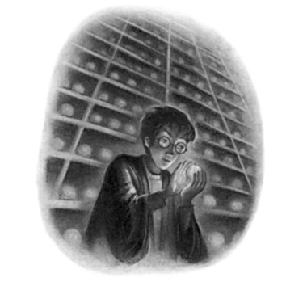
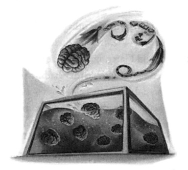
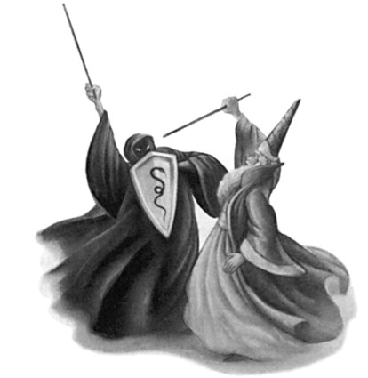
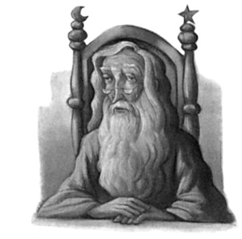
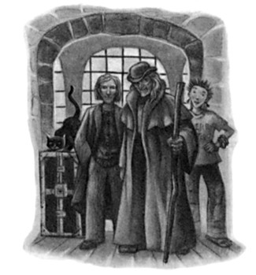
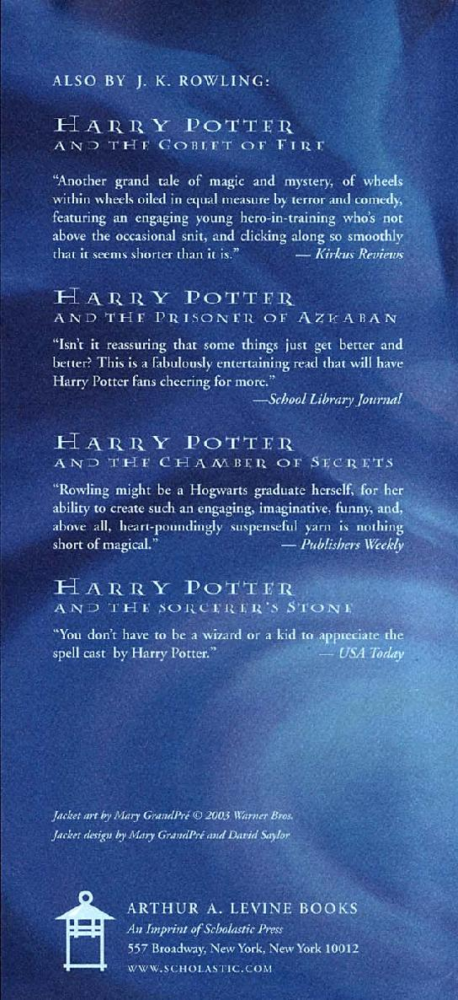
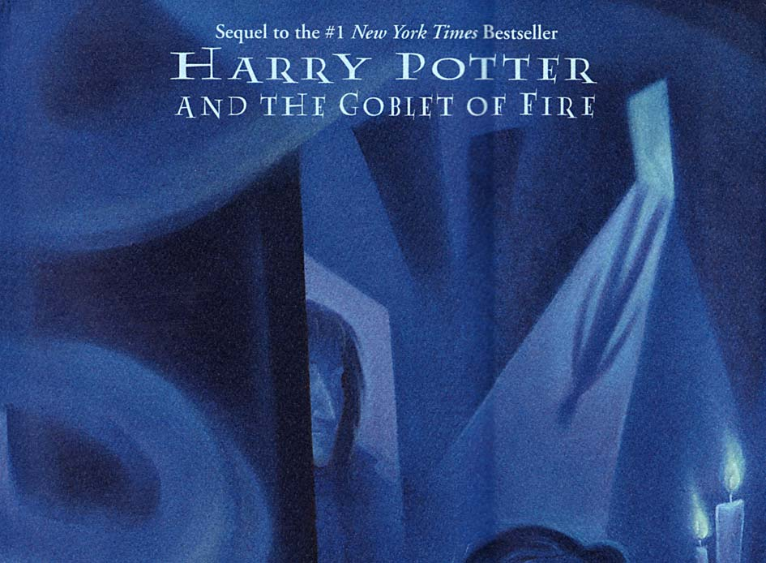
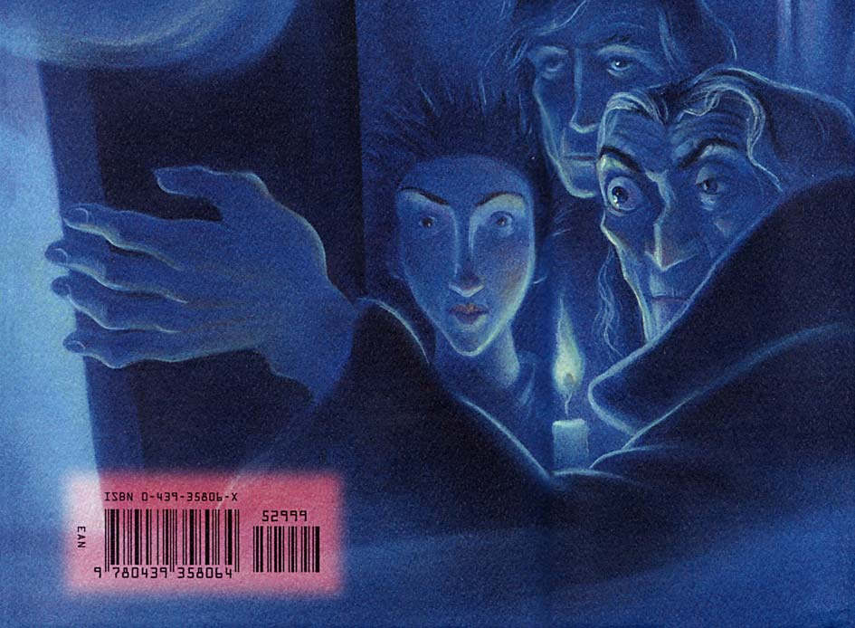

“Now!” roared a voice in Harry’s ear and a thick hairy arm descended from thin air and dragged him upright; Hermione too had been pulled to her feet. Over the plunging, many-colored backs and heads of the centaurs Harry saw Umbridge being borne away through the trees by Bane, still screaming nonstop; her voice grew fainter and fainter until they could no longer hear it over the trampling of hooves surrounding them.
“And these?” said the hard-faced, gray centaur holding Hermione.
“They are young,” said a slow, doleful voice from behind Harry.
“We do not attack foals.”
“They brought her here, Ronan,” replied the centaur who had such a firm grip on Harry. “And they are not so young. . . . He is nearing manhood, this one. . . .”
He shook Harry by the neck of his robes.
“Please,” said Hermione breathlessly, “please, don’t attack us, we don’t think like her, we aren’t Ministry of Magic employees! We only came in here because we hoped you’d drive her off for us —”
Harry knew at once from the look on the face of the gray centaur holding Hermione that she had made a terrible mistake in saying this.
The gray centaur threw back his head, his back legs stamping furiously, and bellowed, “You see, Ronan? They already have the arrogance of their kind! So we were to do your dirty work, were we, human girl? We were to act as your servants, drive away your enemies like obedient hounds?”
“No!” said Hermione in a horrorstruck squeak. “Please — I didn’t mean that! I just hoped you’d be able to — to help us —”
But she seemed to be going from bad to worse.
“We do not help humans!” snarled the centaur holding Harry, tightening his grip and rearing a little at the same time, so that Harry’s feet left the ground momentarily. “We are a race apart and proud to be so. . . . We will not permit you to walk from here, boasting that we did your bidding!”
756
FIGHT AND FLIGHT
“We’re not going to say anything like that!” Harry shouted. “We know you didn’t do anything because we wanted you to —”
But nobody seemed to be listening to him. A bearded centaur toward the back of the crowd shouted, “They came here unasked, they must pay the consequences!”
A roar of approval met these words and a dun-colored centaur shouted, “They can join the woman!”
“You said you didn’t hurt the innocent!” shouted Hermione, real tears sliding down her face now. “We haven’t done anything to hurt you, we haven’t used wands or threats, we just want to go back to school, please let us go back —”
“We are not all like the traitor Firenze, human girl!” shouted the gray centaur, to more neighing roars of approval from his fellows.
“Perhaps you thought us pretty talking horses? We are an ancient people who will not stand wizard invasions and insults! We do not recognize your laws, we do not acknowledge your superiority, we are —”
But they did not hear what else centaurs were, for at that moment there came a crashing noise on the edge of the clearing so loud that all of them — Harry, Hermione, and the fifty or so centaurs filling the clearing — looked around. Harry’s centaur let him fall to the ground again as his hands flew to his bow and quiver of arrows; Hermione had been dropped too, and Harry hurried toward her as two thick tree trunks parted ominously and the monstrous form of Grawp the giant appeared in the gap.
The centaurs nearest him backed into those behind. The clearing was now a forest of bows and arrows waiting to be fired, all pointing upward at the enormous grayish face now looming over them from just beneath the thick canopy of branches. Grawp’s lopsided mouth was gaping stupidly. They could see his bricklike yellow teeth glimmering in the half-light, his dull sludge-colored eyes narrowed as he squinted down at the creatures at his feet. Broken ropes trailed from both ankles.
757
CHAPTER THIRTY-THREE
He opened his mouth even wider.
“Hagger.”
Harry did not know what “hagger” meant, or what language it was from, nor did he much care — he was watching Grawp’s feet, which were almost as long as Harry’s whole body. Hermione gripped his arm tightly; the centaurs were quite silent, staring up at the giant, whose huge, round head moved from side to side as he continued to peer amongst them as though looking for something he had dropped.
“Hagger!” he said again, more insistently.
“Get away from here, giant!” called Magorian. “You are not welcome among us!”
These words seemed to make no impression whatsoever on Grawp.
He stooped a little (the centaurs’ arms tensed on their bows) and then bellowed, “HAGGER!”
A few of the centaurs looked worried now. Hermione, however, gave a gasp.
“Harry!” she whispered. “I think he’s trying to say ‘Hagrid’!”
At this precise moment Grawp caught sight of them, the only two humans in a sea of centaurs. He lowered his head another foot or so, staring intently at them. Harry could feel Hermione shaking as Grawp opened his mouth wide again and said, in a deep, rumbling voice, “Hermy.”
“Goodness,” said Hermione, gripping Harry’s arm so tightly it was growing numb and looking as though she was about to faint, “he —
he remembered!”
“HERMY!” roared Grawp. “WHERE HAGGER?”
“I don’t know!” squealed Hermione, terrified. “I’m sorry, Grawp, I don’t know!”
“GRAWP WANT HAGGER!”
One of the giant’s massive hands swooped down upon them —
Hermione let out a real scream, ran a few steps backward and fell over.
Wandless, Harry braced himself to punch, kick, bite, or whatever else
758
FIGHT AND FLIGHT
it took as the hand flew toward him and knocked a snow-white centaur off his legs.
It was what the centaurs had been waiting for — Grawp’s outstretched fingers were a foot from Harry when fifty arrows went soaring through the air at the giant, peppering his enormous face, causing him to howl with pain and rage and straighten up again, rubbing his face with his enormous hands, breaking off the arrow shafts but forcing the heads in still deeper.
He yelled and stamped his enormous feet and the centaurs scattered out of the way. Pebble-sized droplets of Grawp’s blood showered Harry as he pulled Hermione to her feet and the pair of them ran as fast as they could for the shelter of the trees. Once there they looked back — Grawp was snatching blindly at the centaurs as blood ran all down his face; they were retreating in disorder, galloping away through the trees on the other side of the clearing. As Harry and Hermione watched, Grawp gave another roar of fury and plunged after them, smashing more trees aside as he went.
“Oh no,” said Hermione, quaking so badly that her knees gave way.
“Oh, that was horrible. And he might kill them all. . . .”
“I’m not that fussed, to be honest,” said Harry bitterly.
The sounds of the galloping centaurs and the blundering giant were growing fainter and fainter. As Harry listened to them his scar gave another great throb and a wave of terror swept over him.
They had wasted so much time — they were even further from rescuing Sirius than they had been when he had had the vision. Not only had Harry managed to lose his wand but they were stuck in the middle of the Forbidden Forest with no means of transport whatsoever.
“Smart plan,” he spat at Hermione, keen to release some of his fury.
“Really smart plan. Where do we go from here?”
“We need to get back up to the castle,” said Hermione faintly.
“By the time we’ve done that, Sirius’ll probably be dead!” said Harry, kicking a nearby tree in temper; there was a high-pitched
759
CHAPTER THIRTY-THREE
chattering overhead and he looked up to see an angry bowtruckle flexing its long twiglike fingers at him.
“Well, we can’t do anything without wands,” said Hermione hopelessly, dragging herself up again. “Anyway, Harry, how exactly were you planning to get all the way to London?”
“Yeah, we were just wondering that,” said a familiar voice from behind her.
Harry and Hermione moved instinctively together, peering through the trees, as Ron came into sight, with Ginny, Neville, and Luna hurrying along behind him. All of them looked a little the worse for wear — there were several long scratches running the length of Ginny’s cheek, a large purple lump was swelling above Neville’s right eye, Ron’s lip was bleeding worse than ever — but all were looking rather pleased with themselves.
“So,” said Ron, pushing aside a low-hanging branch and holding out Harry’s wand, “had any ideas?”
“How did you get away?” asked Harry in amazement, taking his wand from Ron.
“Couple of Stunners, a Disarming Charm, Neville brought off a really nice little Impediment Jinx,” said Ron airily, now handing back Hermione’s wand too. “But Ginny was best, she got Malfoy — Bat-Bogey Hex — it was superb, his whole face was covered in the great flapping things. Anyway, we saw you heading into the forest out of the window and followed. What’ve you done with Umbridge?”
“She got carried away,” said Harry. “By a herd of centaurs.”
“And they left you behind?” asked Ginny, looking astonished.
“No, they got chased off by Grawp,” said Harry.
“Who’s Grawp?” Luna asked interestedly.
“Hagrid’s little brother,” said Ron promptly. “Anyway, never mind that now. Harry, what did you find out in the fire? Has You-Know-Who got Sirius or — ?”
“Yes,” said Harry, as his scar gave another painful prickle, “and I’m
760
FIGHT AND FLIGHT
sure Sirius is still alive, but I can’t see how we’re going to get there to help him.”
They all fell silent, looking rather scared. The problem facing them seemed insurmountable.
“Well, we’ll have to fly, won’t we?” said Luna in the closest thing to a matter-of-fact voice Harry had ever heard her use.
“Okay,” said Harry irritably, rounding on her, “first of all, ‘we’
aren’t doing anything if you’re including yourself in that, and second of all, Ron’s the only one with a broomstick that isn’t being guarded by a security troll, so —”
“I’ve got a broom!” said Ginny.
“Yeah, but you’re not coming,” said Ron angrily.
“Excuse me, but I care what happens to Sirius as much as you do!”
said Ginny, her jaw set so that her resemblance to Fred and George was suddenly striking.
“You’re too —” Harry began.
“I’m three years older than you were when you fought You-Know-Who over the Sorcerer’s Stone,” she said fiercely, “and it’s because of me Malfoy’s stuck back in Umbridge’s office with giant flying bogeys attacking him —”
“Yeah, but —”
“We were all in the D.A. together,” said Neville quietly. “It was all supposed to be about fighting You-Know-Who, wasn’t it? And this is the first chance we’ve had to do something real — or was that all just a game or something?”
“No — of course it wasn’t —” said Harry impatiently.
“Then we should come too,” said Neville simply. “We want to help.”
“That’s right,” said Luna, smiling happily.
Harry’s eyes met Ron’s. He knew that Ron was thinking exactly what he was: If he could have chosen any members of the D.A. in addition to himself, Ron, and Hermione to join him in the attempt to rescue Sirius, he would not have picked Ginny, Neville, or Luna.
761
CHAPTER THIRTY-THREE
“Well, it doesn’t matter anyway,” said Harry frustratedly, “because we still don’t know how to get there —”
“I thought we’d settled that?” said Luna maddeningly. “We’re flying!”
“Look,” said Ron, barely containing his anger, “you might be able to fly without a broomstick but the rest of us can’t sprout wings whenever we —”
“There are other ways of flying than with broomsticks,” said Luna serenely.
“I s’pose we’re going to ride on the back of the Kacky Snorgle or whatever it is?” Ron demanded.
“The Crumple-Horned Snorkack can’t fly,” said Luna in a dignified voice, “but they can, and Hagrid says they’re very good at finding places their riders are looking for.”
Harry whirled around. Standing between two trees, their white eyes gleaming eerily, were two thestrals, watching the whispered conversation as though they understood every word.
“Yes!” he whispered, moving toward them. They tossed their reptilian heads, throwing back long black manes, and Harry stretched out his hand eagerly and patted the nearest one’s shining neck. How could he ever have thought them ugly?
“Is it those mad horse things?” said Ron uncertainly, staring at a point slightly to the left of the thestral Harry was patting. “Those ones you can’t see unless you’ve watched someone snuff it?”
“Yeah,” said Harry.
“How many?”
“Just two.”
“Well, we need three,” said Hermione, who was still looking a little shaken, but determined just the same.
“Four, Hermione,” said Ginny, scowling.
“I think there are six of us, actually,” said Luna calmly, counting.
“Don’t be stupid, we can’t all go!” said Harry angrily. “Look, you
762
FIGHT AND FLIGHT
three” — he pointed at Neville, Ginny, and Luna — “you’re not involved in this, you’re not —”
They burst into more protests. His scar gave another, more painful, twinge. Every moment they delayed was precious; he did not have time to argue.
“Okay, fine, it’s your choice,” he said curtly. “But unless we can find more thestrals you’re not going to be able —”
“Oh, more of them wil come,” said Ginny confidently, who like Ron was squinting in quite the wrong direction, apparently under the impression that she was looking at the horses.
“What makes you think that?”
“Because in case you hadn’t noticed, you and Hermione are both covered in blood,” she said coolly, “and we know Hagrid lures thestrals with raw meat, so that’s probably why these two turned up in the first place. . . .”
Harry felt a soft tug on his robes at that moment and looked down to see the closest thestral licking his sleeve, which was damp with Grawp’s blood.
“Okay, then,” he said, a bright idea occurring. “Ron and I will take these two and go ahead, and Hermione can stay here with you three and she’ll attract more thestrals —”
“I’m not staying behind!” said Hermione furiously.
“There’s no need,” said Luna, smiling. “Look, here come more now. . . . You two must really smell. . . .”
Harry turned. No fewer than six or seven thestrals were picking their way through the trees now, their great leathery wings folded tight to their bodies, their eyes gleaming through the darkness. He had no excuse now. . . .
“All right,” he said angrily, “pick one and get on, then.”
763

C H A P T E R T H I R T Y - F O U R
THE DEPARTMENT
OF MYSTERIES
arry wound his hand tightly into the mane of the nearest H thestral, placed a foot on a stump nearby, and scrambled clumsily onto the horse’s silken back. It did not object, but twisted its head around, fangs bared, and attempted to continue its eager licking of his robes.
He found there was a way of lodging his knees behind the wing joints that made him feel more secure and looked around at the others. Neville had heaved himself over the back of the next thestral and was now attempting to swing one short leg over the creature’s back.
Luna was already in place, sitting sidesaddle and adjusting her robes as though she did this every day. Ron, Hermione, and Ginny, however, were still standing motionless on the spot, openmouthed and staring.
“What?” he said.
“How’re we supposed to get on?” said Ron faintly. “When we can’t see the things?”
“Oh it’s easy,” said Luna, sliding obligingly from her thestral and marching over to him, Hermione, and Ginny. “Come here. . . .”
764
THE DEPARTMENT
OF MYSTERIES
She pulled them over to the other thestrals standing around and one by one managed to help them onto the backs of their mounts. All three looked extremely nervous as she wound their hands into the horses’ manes and told them to grip tightly before getting back onto her own steed.
“This is mad,” Ron said faintly, moving his free hand gingerly up and down his horse’s neck. “Mad . . . if I could just see it —”
“You’d better hope it stays invisible,” said Harry darkly. “We all ready, then?”
They all nodded and he saw five pairs of knees tighten beneath their robes.
“Okay . . .”
He looked down at the back of his thestral’s glossy black head and swallowed. “Ministry of Magic, visitors’ entrance, London, then,” he said uncertainly. “Er . . . if you know . . . where to go . . .”
For a moment his thestral did nothing at all. Then, with a sweeping movement that nearly unseated him, the wings on either side extended, the horse crouched slowly and then rocketed upward so fast and so steeply that Harry had to clench his arms and legs tightly around the horse to avoid sliding backward over its bony rump. He closed his eyes and put his face down into the horse’s silky mane as they burst through the topmost branches of the trees and soared out into a bloodred sunset.
Harry did not think he had ever moved so fast: The thestral streaked over the castle, its wide wings hardly beating. The cooling air was slapping Harry’s face; eyes screwed up against the rushing wind, he looked around and saw his five fellows soaring along behind him, each of them bent as low as possible into the neck of their thestral to protect themselves from its slipstream.
They were over the Hogwarts grounds, they had passed Hogsmeade. Harry could see mountains and gullies below them. In the
765
CHAPTER THIRTY-FOUR
falling darkness Harry saw small collections of lights as they passed over more villages, then a winding road on which a single car was beetling its way home through the hills. . . .
“This is bizarre!” Harry heard Ron yell from somewhere behind him, and he imagined how it must feel to be speeding along at this height with no visible means of support. . . .
Twilight fell: The sky turned to a light, dusky purple littered with tiny silver stars, and soon it was only the lights of Muggle towns that gave them any clue of how far from the ground they were or how very fast they were traveling. Harry’s arms were wrapped tightly around his horse’s neck as he willed it to go even faster. How much time had elapsed since he had seen Sirius lying on the Department of Mysteries floor? How much longer would he be able to resist Voldemort? All Harry knew for sure was that Sirius had neither done as Voldemort wanted, nor died, for he was convinced that either outcome would cause him to feel Voldemort’s jubilation or fury course through his own body, making his scar sear as painfully as it had on the night Mr.
Weasley was attacked. . . .
On they flew through the gathering darkness; Harry’s face felt stiff and cold, his legs numb from gripping the thestral’s sides so tightly, but he did not dare shift positions lest he slip. . . . He was deaf from the thundering in his ears and his mouth was dry and frozen from the rush of cold night air. He had lost all sense of how far they had come; all his faith was in the beast below him, still streaking purposefully through the night, barely flapping its wings as it sped ever onward. . . .
If they were too late . . .
He’s still alive, he’s still fighting, I can feel it. . . .
If Voldemort decided Sirius was not going to crack . . .
I’d know. . . .
Harry’s stomach gave a jolt. The thestral’s head was suddenly pointing toward the ground and he had actually slid forward a few inches along its neck. They were descending at last. . . . He heard one of the
766
THE DEPARTMENT
OF MYSTERIES
girls shriek behind him and twisted around dangerously but could see no sign of a falling body. . . . Presumably they had received a shock from the change of position, just as he had. . . .
And now bright orange lights were growing larger and rounder on all sides. They could see the tops of buildings, streams of headlights like luminous insect eyes, squares of pale yellow that were windows.
Quite suddenly, it seemed, they were hurtling toward the pavement.
Harry gripped the thestral with every last ounce of his strength, braced for a sudden impact, but the horse touched the dark ground as lightly as a shadow and Harry slid from his back, looking around at the street where the overflowing dumpster still stood a short way from the vandalized telephone box, both drained of color in the flat orange glare of the streetlights.
Ron landed a short way away and toppled immediately off his thestral onto the pavement.
“Never again,” he said, struggling to his feet. He made as though to stride away from his thestral, but, unable to see it, collided with its hindquarters and almost fell over again. “Never, ever again . . . that was the worst —”
Hermione and Ginny touched down on either side of him. Both slid off their mounts a little more gracefully than Ron, though with similar expressions of relief at being back on firm ground. Neville jumped down, shaking, but Luna dismounted smoothly.
“Where do we go from here, then?” she asked Harry in a politely interested voice, as though this was all a rather interesting day-trip.
“Over here,” he said. He gave his thestral a quick, grateful pat, then led the way quickly to the battered telephone box and opened the door. “Come on!” he urged the others as they hesitated.
Ron and Ginny marched in obediently; Hermione, Neville, and Luna squashed themselves in after them; Harry took one glance back at the thestrals, now foraging for scraps of rotten food inside the dumpster, then forced himself into the box after Luna.
767
CHAPTER THIRTY-FOUR
“Whoever’s nearest the receiver, dial six two four four two!” he said.
Ron did it, his arm bent bizarrely to reach the dial. As it whirred back into place the cool female voice sounded inside the box, “Welcome to the Ministry of Magic. Please state your name and business.”
“Harry Potter, Ron Weasley, Hermione Granger,” Harry said very quickly, “Ginny Weasley, Neville Longbottom, Luna Lovegood . . .
We’re here to save someone, unless your Ministry can do it first!”
“Thank you,” said the cool female voice. “Visitors, please take the badges and attach them to the front of your robes.”
Half a dozen badges slid out of the metal chute where returned coins usually appeared. Hermione scooped them up and handed them mutely to Harry over Ginny’s head; he glanced at the topmost one.
HARRY POTTER
rescue mission
“Visitor to the Ministry, you are required to submit to a search and present your wand for registration at the security desk, which is located at the far end of the Atrium.”
“Fine!” Harry said loudly, as his scar gave another throb. “Now can we move?”
The floor of the telephone box shuddered and the pavement rose up past the glass windows of the telephone box. The scavenging thestrals were sliding out of sight, blackness closed over their heads, and with a dull grinding noise they sank down into the depths of the Ministry of Magic.
A chink of soft golden light hit their feet and, widening, rose up their bodies. Harry bent his knees and held his wand as ready as he could in such cramped conditions, peering through the glass to see whether anybody was waiting for them in the Atrium, but it seemed to be completely empty. The light was dimmer than it had been by day. There were no fires burning under the mantelpieces set into the
768
THE DEPARTMENT
OF MYSTERIES
walls, but he saw as the lift slid smoothly to a halt that golden symbols continued to twist sinuously in the dark blue ceiling.
“The Ministry of Magic wishes you a pleasant evening,” said the woman’s voice.
The door of the telephone box burst open; Harry toppled out of it, followed by Neville and Luna. The only sound in the Atrium was the steady rush of water from the golden fountain, where jets from the wands of the witch and wizard, the point of the centaur’s arrow, the tip of the goblin’s hat, and the house-elf’s ears continued to gush into the surrounding pool.
“Come on,” said Harry quietly and the six of them sprinted off down the hall, Harry in the lead, past the fountain, toward the desk where the security man who had weighed Harry’s wand had sat and which was now deserted.
Harry felt sure that there ought to be a security person there, sure that their absence was an ominous sign, and his feeling of foreboding increased as they passed through the golden gates to the lifts. He pressed the nearest down button and a lift clattered into sight almost immediately, the golden grilles slid apart with a great, echoing clanking, and they dashed inside. Harry stabbed the number nine button, the grilles closed with a bang, and the lift began to descend, jangling and rattling. Harry had not realized how noisy the lifts were on the day that he had come with Mr. Weasley — he was sure that the din would raise every security person within the building, yet when the lift halted, the cool female voice said, “Department of Mysteries,” and the grilles slid open again, they stepped out into the corridor where nothing was moving but the nearest torches, flickering in the rush of air from the lift.
Harry turned toward the plain black door. After months and months of dreaming about it, he was here at last. . . .
“Let’s go,” he whispered, and he led the way down the corridor, Luna right behind him, gazing around with her mouth slightly open.
769
CHAPTER THIRTY-FOUR
“Okay, listen,” said Harry, stopping again within six feet of the door. “Maybe . . . maybe a couple of people should stay here as a —
as a lookout, and —”
“And how’re we going to let you know something’s coming?” asked Ginny, her eyebrows raised. “You could be miles away.”
“We’re coming with you, Harry,” said Neville.
“Let’s get on with it,” said Ron firmly.
Harry still did not want to take them all with him, but it seemed he had no choice. He turned to face the door and walked forward. Just as it had in his dream, it swung open and he marched forward, leading the others over the threshold.
They were standing in a large, circular room. Everything in here was black including the floor and ceiling — identical, unmarked, handle-less black doors were set at intervals all around the black walls, interspersed with branches of candles whose flames burned blue, their cool, shimmering light reflected in the shining marble floor so that it looked as though there was dark water underfoot.
“Someone shut the door,” Harry muttered.
He regretted giving this order the moment Neville had obeyed it.
Without the long chink of light from the torch-lit corridor behind them, the place became so dark that for a moment the only things they could see were the bunches of shivering blue flames on the walls and their ghostly reflections in the floor below.
In his dream, Harry had always walked purposefully across this room to the door immediately opposite the entrance and walked on.
But there were around a dozen doors here. Just as he was gazing ahead at the doors opposite him, trying to decide which was the right one, there was a great rumbling noise and the candles began to move sideways. The circular wall was rotating.
Hermione grabbed Harry’s arm as though frightened the floor might move too, but it did not. For a few seconds the blue flames around them were blurred to resemble neon lines as the wall sped
770
THE DEPARTMENT
OF MYSTERIES
around and then, quite as suddenly as it had started, the rumbling stopped and everything became stationary once again.
Harry’s eyes had blue streaks burned into them; it was all he could see. “What was that about?” whispered Ron fearfully.
“I think it was to stop us knowing which door we came in from,”
said Ginny in a hushed voice.
Harry realized at once that she was right: He could no sooner have picked the exit from the other doors than located an ant upon the jet-black floor. Meanwhile, the door through which they needed to proceed could be any of the dozen surrounding them.
“How’re we going to get back out?” said Neville uncomfortably.
“Well, that doesn’t matter now,” said Harry forcefully, blinking to try and erase the blue lines from his vision, and clutching his wand tighter than ever. “We won’t need to get out till we’ve found Sirius —”
“Don’t go calling for him, though!” Hermione said urgently, but Harry had never needed her advice less; his instinct was to keep as quiet as possible for the time being.
“Where do we go, then, Harry?” Ron asked.
“I don’t —” Harry began. He swallowed. “In the dreams I went through the door at the end of the corridor from the lifts into a dark room — that’s this one — and then I went through another door into a room that kind of . . . glitters. We should try a few doors,” he said hastily. “I’ll know the right way when I see it. C’mon.”
He marched straight at the door now facing him, the others following close behind him, set his left hand against its cool, shining surface, raised his wand, ready to strike the moment it opened, and pushed. It swung open easily.
After the darkness of the first room, the lamps hanging low on golden chains from this ceiling gave the impression that this long rectangular room was much brighter, though there were no glittering, shimmering lights such as Harry had seen in his dreams. The place
771
CHAPTER THIRTY-FOUR
was quite empty except for a few desks and, in the very middle of the room, an enormous glass tank of deep-green water, big enough for all of them to swim in, which contained a number of pearly white objects that were drifting around lazily in the liquid.
“What’re those things?” whispered Ron.
“Dunno,” said Harry.
“Are they fish?” breathed Ginny.
“Aquavirius maggots!” said Luna excitedly. “Dad said the Ministry were breeding —”
“No,” said Hermione. She sounded odd. She moved forward to look through the side of the tank. “They’re brains.”
“Brains?”
“Yes . . . I wonder what they’re doing with them?”
Harry joined her at the tank. Sure enough, there could be no mistake now that he saw them at close quarters. Glimmering eerily they drifted in and out of sight in the depths of the green water, looking something like slimy cauliflowers.
“Let’s get out of here,” said Harry. “This isn’t right, we need to try another door —”
“There are doors here too,” said Ron, pointing around the walls.
Harry’s heart sank; how big was this place?
“In my dream I went through that dark room into the second one,”
he said. “I think we should go back and try from there.”
So they hurried back into the dark, circular room; the ghostly shapes of the brains were now swimming before Harry’s eyes instead of the blue candle flames.
“Wait!” said Hermione sharply, as Luna made to close the door of the brain room behind them. “Flagrate!”
She drew with her wand in midair and a fiery X appeared on the door. No sooner had the door clicked shut behind them than there was a great rumbling, and once again the wall began to revolve very fast, but now there was a great red-gold blur in amongst the faint blue,
772
THE DEPARTMENT
OF MYSTERIES
and when all became still again, the fiery cross still burned, showing the door they had already tried.
“Good thinking,” said Harry. “Okay, let’s try this one —”
Again he strode directly at the door facing him and pushed it open, his wand still raised, the others at his heels.
This room was larger than the last, dimly lit and rectangular, and the center of it was sunken, forming a great stone pit some twenty feet below them. They were standing on the topmost tier of what seemed to be stone benches running all around the room and descending in steep steps like an amphitheater, or the courtroom in which Harry had been tried by the Wizengamot. Instead of a chained chair, however, there was a raised stone dais in the center of the lowered floor, and upon this dais stood a stone archway that looked so ancient, cracked, and crumbling that Harry was amazed the thing was still standing. Unsupported by any surrounding wall, the archway was hung with a tattered black curtain or veil which, despite the complete stillness of the cold surrounding air, was fluttering very slightly as though it had just been touched.
“Who’s there?” said Harry, jumping down onto the bench below.
There was no answering voice, but the veil continued to flutter and sway.
“Careful!” whispered Hermione.
Harry scrambled down the benches one by one until he reached the stone bottom of the sunken pit. His footsteps echoed loudly as he walked slowly toward the dais. The pointed archway looked much taller from where he stood now than when he had been looking down on it from above. Still the veil swayed gently, as though somebody had just passed through it.
“Sirius?” Harry spoke again, but much more quietly now that he was nearer.
He had the strangest feeling that there was someone standing right behind the veil on the other side of the archway. Gripping his wand very tightly, he edged around the dais, but there was nobody there. All that could be seen was the other side of the tattered black veil.
773
CHAPTER THIRTY-FOUR
“Let’s go,” called Hermione from halfway up the stone steps. “This isn’t right, Harry, come on, let’s go. . . .”
She sounded scared, much more scared than she had in the room where the brains swam, yet Harry thought the archway had a kind of beauty about it, old though it was. The gently rippling veil intrigued him; he felt a very strong inclination to climb up on the dais and walk through it.
“Harry, let’s go, okay?” said Hermione more forcefully.
“Okay,” he said, but he did not move. He had just heard something. There were faint whispering, murmuring noises coming from the other side of the veil.
“What are you saying?” he said very loudly, so that the words echoed all around the surrounding stone benches.
“Nobody’s talking, Harry!” said Hermione, now moving over to him.
“Someone’s whispering behind there,” he said, moving out of her reach and continuing to frown at the veil. “Is that you, Ron?”
“I’m here, mate,” said Ron, appearing around the side of the archway.
“Can’t anyone else hear it?” Harry demanded, for the whispering and murmuring was becoming louder; without really meaning to put it there, he found his foot was on the dais.
“I can hear them too,” breathed Luna, joining them around the side of the archway and gazing at the swaying veil. “There are people in there!”
“What do you mean, ‘ in there’?” demanded Hermione, jumping down from the bottom step and sounding much angrier than the occasion warranted. “There isn’t any ‘ in there, ’ it’s just an archway, there’s no room for anybody to be there — Harry, stop it, come away —”
She grabbed his arm and pulled, but he resisted.
“Harry, we are supposed to be here for Sirius!” she said in a high-pitched, strained voice.
774
THE DEPARTMENT
OF MYSTERIES
“Sirius,” Harry repeated, still gazing, mesmerized, at the continuously swaying veil. “Yeah . . .”
And then something slid back into place in his brain: Sirius, captured, bound, and tortured, and he was staring at this archway. . . .
He took several paces back from the dais and wrenched his eyes from the veil.
“Let’s go,” he said.
“That’s what I’ve been trying to — well, come on, then!” said Hermione, and she led the way back around the dais. On the other side, Ginny and Neville were staring, apparently entranced, at the veil too. Without speaking, Hermione took hold of Ginny’s arm, Ron Neville’s, and they marched them firmly back to the lowest stone bench and clambered all the way back up to the door.
“What d’you reckon that arch was?” Harry asked Hermione as they regained the dark circular room.
“I don’t know, but whatever it was, it was dangerous,” she said firmly, again inscribing a fiery cross upon the door.
Once more the wall spun and became still again. Harry approached a door at random and pushed. It did not move.
“What’s wrong?” said Hermione.
“It’s . . . locked . . .” said Harry, throwing his weight at the door, but it did not budge.
“This is it, then, isn’t it?” said Ron excitedly, joining Harry in the attempt to force the door open. “Bound to be!”
“Get out of the way!” said Hermione sharply. She pointed her wand at the place where a lock would have been on an ordinary door and said, “Alohomora!”
Nothing happened.
“Sirius’s knife!” said Harry, and he pulled it out from inside his robes and slid it into the crack between the door and the wall. The others all watched eagerly as he ran it from top to bottom, withdrew it, and then flung his shoulder again at the door. It remained as firmly
775
CHAPTER THIRTY-FOUR
shut as ever. What was more, when Harry looked down at the knife, he saw that the blade had melted.
“Right, we’re leaving that room,” said Hermione decisively.
“But what if that’s the one?” said Ron, staring at it with a mixture of apprehension and longing.
“It can’t be, Harry could get through all the doors in his dream,”
said Hermione, marking the door with another fiery cross as Harry replaced the now-useless handle of Sirius’s knife in his pocket.
“You know what could be in there?” said Luna eagerly, as the wal started to spin yet again.
“Something blibbering, no doubt,” said Hermione under her breath, and Neville gave a nervous little laugh.
The wall slid back to a halt and Harry, with a feeling of increasing desperation, pushed the next door open.
“This is it!”
He knew it at once by the beautiful, dancing, diamond-sparkling light. As Harry’s eyes became more accustomed to the brilliant glare he saw clocks gleaming from every surface, large and small, grandfather and carriage, hanging in spaces between the bookcases or standing on desks ranging the length of the room, so that a busy, relentless ticking filled the place like thousands of minuscule, marching footsteps. The source of the dancing, diamond-bright light was a towering crystal bell jar that stood at the far end of the room.
“This way!”
Harry’s heart was pumping frantically now that he knew they were on the right track. He led the way forward down the narrow space between the lines of the desks, heading, as he had done in his dream, for the source of the light, the crystal bell jar quite as tall as he was that stood on a desk and appeared to be full of a billowing, glittering wind.
“Oh look!” said Ginny, as they drew nearer, pointing at the very heart of the bell jar.
776
THE DEPARTMENT
OF MYSTERIES
Drifting along in the sparkling current inside was a tiny, jewel-bright egg. As it rose in the jar it cracked open and a hummingbird emerged, which was carried to the very top of the jar, but as it fell on the draft, its feathers became bedraggled and damp again, and by the time it had been borne back to the bottom of the jar it had been en-closed once more in its egg.
“Keep going!” said Harry sharply, because Ginny showed signs of wanting to stop and watch the egg’s progress back into a bird.
“You dawdled enough by that old arch!” she said crossly, but followed him past the bell jar to the only door behind it.
“This is it,” Harry said again, and his heart was now pumping so hard and fast he felt it must interfere with his speech. “It’s through here —”
He glanced around at them all. They had their wands out and looked suddenly serious and anxious. He looked back at the door and pushed. It swung open.
They were there, they had found the place: high as a church and full of nothing but towering shelves covered in small, dusty, glass orbs.
They glimmered dully in the light issuing from more candle brackets set at intervals along the shelves. Like those in the circular room behind them, their flames were burning blue. The room was very cold.
Harry edged forward and peered down one of the shadowy aisles between two rows of shelves. He could not hear anything nor see the slightest sign of movement.
“You said it was row ninety-seven,” whispered Hermione.
“Yeah,” breathed Harry, looking up at the end of the closest row.
Beneath the branch of blue-glowing candles protruding from it glimmered the silver figure 53.
“We need to go right, I think,” whispered Hermione, squinting to the next row. “Yes . . . that’s fifty-four. . . .”
“Keep your wands out,” Harry said softly.
They crept forward, staring behind them as they went on down the
777
CHAPTER THIRTY-FOUR
long alleys of shelves, the farther ends of which were in near total darkness. Tiny, yellowing labels had been stuck beneath each glass orb on the shelf. Some of them had a weird, liquid glow; others were as dull and dark within as blown lightbulbs.
They passed row eighty-four . . . eighty-five . . . Harry was listening hard for the slightest sound of movement, but Sirius might be gagged now, or else unconscious . . . or, said an unbidden voice inside his head, he might already be dead. . . .
I’d have felt it, he told himself, his heart now hammering against his Adam’s apple. I’d already know. . . .
“Ninety-seven!” whispered Hermione.
They stood grouped around the end of the row, gazing down the alley beside it. There was nobody there.
“He’s right down at the end,” said Harry, whose mouth had become slightly dry. “You can’t see properly from here. . . .”
And he led them forward, between the towering rows of glass balls, some of which glowed softly as they passed. . . .
“He should be near here,” whispered Harry, convinced that every step was going to bring the ragged form of Sirius into view upon the darkened floor. “Anywhere here . . . really close . . .”
“Harry?” said Hermione tentatively, but he did not want to respond. His mouth was very dry now.
“Somewhere about . . . here . . .” he said.
They had reached the end of the row and emerged into more dim candlelight. There was nobody there at all. All was echoing, dusty silence.
“He might be . . .” Harry whispered hoarsely, peering down the alley next door. “Or maybe . . .” He hurried to look down the one beyond that.
“Harry?” said Hermione again.
“What?” he snarled.
778
THE DEPARTMENT
OF MYSTERIES
“I . . . I don’t think Sirius is here.”
Nobody spoke. Harry did not want to look at any of them. He felt sick. He did not understand why Sirius was not here. He had to be here. This was where he, Harry, had seen him. . . .
He ran up the space at the end of the rows, staring down them.
Empty aisle after empty aisle flickered past. He ran the other way, back past his staring companions. There was no sign of Sirius anywhere, nor any hint of a struggle.
“Harry?” Ron called.
“What?”
He did not want to hear what Ron had to say, did not want to hear Ron tell him he had been stupid, or suggest that they ought to go back to Hogwarts. But the heat was rising in his face and he felt as though he would like to skulk down here in the darkness for a long while before facing the brightness of the Atrium above and the others’ accusing stares. . . .
“Have you seen this?” said Ron.
“What?” said Harry, but eagerly this time — it had to be a sign that Sirius had been there, a clue — he strode back to where they were all standing, a little way down row ninety-seven, but found nothing except Ron staring at one of the dusty glass spheres on the shelves.
“What?” Harry repeated glumly.
“It’s — it’s got your name on,” said Ron.
Harry moved a little closer. Ron was pointing at one of the small glass spheres that glowed with a dull inner light, though it was very dusty and appeared not to have been touched for many years.
“My name?” said Harry blankly.
He stepped forward. Not as tall as Ron, he had to crane his neck to read the yellowish label affixed to the shelf right beneath the dusty glass ball. In spidery writing was written a date of some sixteen years previously, and below that:
779
CHAPTER THIRTY-FOUR
S. P. T. to A. P. W. B. D.
Dark Lord
and (?) Harry Potter
Harry stared at it.
“What is it?” Ron asked, sounding unnerved. “What’s your name doing down here?”
He glanced along at the other labels on that stretch of shelf.
“I’m not here,” he said, sounding perplexed. “None of the rest of us are here. . . .”
“Harry, I don’t think you should touch it,” said Hermione sharply, as he stretched out his hand.
“Why not?” he said. “It’s something to do with me, isn’t it?”
“Don’t, Harry,” said Neville suddenly. Harry looked around at him. Neville’s round face was shining slightly with sweat. He looked as though he could not take much more suspense.
“It’s got my name on,” said Harry.
And feeling slightly reckless, he closed his fingers around the dusty ball’s surface. He had expected it to feel cold, but it did not. On the contrary, it felt as though it had been lying in the sun for hours, as though the glow of light within was warming it. Expecting, even hoping, that something dramatic was going to happen, something exciting that might make their long and dangerous journey worthwhile after all, he lifted the glass ball down from its shelf and stared at it.
Nothing whatsoever happened. The others moved in closer around Harry, gazing at the orb as he brushed it free of the clogging dust.
And then, from right behind them, a drawling voice said, “Very good, Potter. Now turn around, nice and slowly, and give that to me.”
780

C H A P T E R T H I R T Y - F I V E
BEYOND THE VEIL
lack shapes were emerging out of thin air all around them, block-B ing their way left and right; eyes glinted through slits in hoods, a dozen lit wand tips were pointing directly at their hearts. Ginny gave a gasp of horror.
“To me, Potter,” repeated the drawling voice of Lucius Malfoy as he held out his hand, palm up.
Harry’s insides plummeted sickeningly. They were trapped and outnumbered two to one.
“To me,” said Malfoy yet again.
“Where’s Sirius?” Harry said.
Several of the Death Eaters laughed. A harsh female voice from the midst of the shadowy figures to Harry’s left said triumphantly, “The Dark Lord always knows!”
“Always,” echoed Malfoy softly. “Now, give me the prophecy, Potter.”
“I want to know where Sirius is!”
“I want to know where Sirius is!” mimicked the woman to his left.
She and her fellow Death Eaters had closed in so that they were
781
CHAPTER THIRTY-FIVE
mere feet away from Harry and the others, the light from their wands dazzling Harry’s eyes.
“You’ve got him,” said Harry, ignoring the rising panic in his chest, the dread he had been fighting since they had first entered the ninety-seventh row. “He’s here. I know he is.”
“The little baby woke up fwightened and fort what it dweamed was twoo, ” said the woman in a horrible, mock-baby voice. Harry felt Ron stir beside him.
“Don’t do anything,” he muttered. “Not yet —”
The woman who had mimicked him let out a raucous scream of laughter.
“You hear him? You hear him? Giving instructions to the other children as though he thinks of fighting us!”
“Oh, you don’t know Potter as I do, Bellatrix,” said Malfoy softly.
“He has a great weakness for heroics; the Dark Lord understands this about him. Now give me the prophecy, Potter. ”
“I know Sirius is here,” said Harry, though panic was causing his chest to constrict and he felt as though he could not breathe properly.
“I know you’ve got him!”
More of the Death Eaters laughed, though the woman still laughed loudest of all.
“It’s time you learned the difference between life and dreams, Potter,” said Malfoy. “Now give me the prophecy, or we start using wands.”
“Go on, then,” said Harry, raising his own wand to chest height. As he did so, the five wands of Ron, Hermione, Neville, Ginny, and Luna rose on either side of him. The knot in Harry’s stomach tightened. If Sirius really was not here, he had led his friends to their deaths for no reason at all. . . .
But the Death Eaters did not strike.
“Hand over the prophecy and no one need get hurt,” said Malfoy coolly.
782
BEYOND THE VEIL
It was Harry’s turn to laugh.
“Yeah, right!” he said. “I give you this — prophecy, is it? And you’ll just let us skip off home, will you?”
The words were hardly out of his mouth when the female Death Eater shrieked, “Accio Proph —”
Harry was just ready for her. He shouted “Protego!” before she had finished her spell, and though the glass sphere slipped to the tips of his fingers he managed to cling on to it.
“Oh, he knows how to play, little bitty baby Potter,” she said, her mad eyes staring through the slits in her hood. “Very well, then —”
“I TOLD YOU, NO!” Lucius Malfoy roared at the woman. “If you smash it — !”
Harry’s mind was racing. The Death Eaters wanted this dusty spun-glass sphere. He had no interest in it. He just wanted to get them all out of this alive, make sure that none of his friends paid a terrible price for his stupidity . . .
The woman stepped forward, away from her fellows, and pulled off her hood. Azkaban had hollowed Bellatrix Lestrange’s face, making it gaunt and skull-like, but it was alive with a feverish, fanatical glow.
“You need more persuasion?” she said, her chest rising and falling rapidly. “Very well — take the smallest one,” she ordered the Death Eaters beside her. “Let him watch while we torture the little girl. I’ll do it.”
Harry felt the others close in around Ginny. He stepped sideways so that he was right in front of her, the prophecy held up to his chest.
“You’ll have to smash this if you want to attack any of us,” he told Bellatrix. “I don’t think your boss will be too pleased if you come back without it, will he?”
She did not move; she merely stared at him, the tip of her tongue moistening her thin mouth.
“So,” said Harry, “what kind of prophecy are we talking about anyway?”
783
CHAPTER THIRTY-FIVE
He could not think what to do but to keep talking. Neville’s arm was pressed against his, and he could feel him shaking. He could feel one of the other’s quickened breath on the back of his head. He was hoping they were all thinking hard about ways to get out of this, because his mind was blank.
“What kind of prophecy?” repeated Bellatrix, the grin fading from her face. “You jest, Harry Potter.”
“Nope, not jesting,” said Harry, his eyes flicking from Death Eater to Death Eater, looking for a weak link, a space through which they could escape. “How come Voldemort wants it?”
Several of the Death Eaters let out low hisses.
“You dare speak his name?” whispered Bellatrix.
“Yeah,” said Harry, maintaining his tight grip on the glass ball, expecting another attempt to bewitch it from him. “Yeah, I’ve got no problem saying Vol —”
“Shut your mouth!” Bellatrix shrieked. “You dare speak his name with your unworthy lips, you dare besmirch it with your half-blood’s tongue, you dare —”
“Did you know he’s a half-blood too?” said Harry recklessly.
Hermione gave a little moan in his ear. “Voldemort? Yeah, his mother was a witch but his dad was a Muggle — or has he been telling you lot he’s pureblood?”
“STUPEF —”
“NO!”
A jet of red light had shot from the end of Bellatrix Lestrange’s wand, but Malfoy had deflected it. His spell caused hers to hit the shelf a foot to the left of Harry and several of the glass orbs there shattered.
Two figures, pearly white as ghosts, fluid as smoke, unfurled themselves from the fragments of broken glass upon the floor and each began to speak. Their voices vied with each other, so that only fragments
784
BEYOND THE VEIL
of what they were saying could be heard over Malfoy and Bellatrix’s shouts.
“. . . at the Solstice will come a new . . .” said the figure of an old, bearded man.
“DO NOT ATTACK! WE NEED THE PROPHECY!”
“He dared — he dares —” shrieked Bellatrix incoherently. “— He stands there — filthy half-blood —”
“WAIT UNTIL WE’VE GOT THE PROPHECY!” bawled Malfoy.
“. . . and none will come after . . .” said the figure of a young woman.
The two figures that had burst from the shattered spheres had melted into thin air. Nothing remained of them or their erstwhile homes but fragments of glass upon the floor. They had, however, given Harry an idea. The problem was going to be conveying it to the others.
“You haven’t told me what’s so special about this prophecy I’m supposed to be handing over,” he said, playing for time. He moved his foot slowly sideways, feeling around for someone else’s.
“Do not play games with us, Potter,” said Malfoy.
“I’m not playing games,” said Harry, half his mind on the conversation, half on his wandering foot. And then he found someone’s toes and pressed down upon them. A sharp intake of breath behind him told him they were Hermione’s.
“What?” she whispered.
“Dumbledore never told you that the reason you bear that scar was hidden in the bowels of the Department of Mysteries?” said Malfoy sneeringly.
“I — what?” said Harry, and for a moment he quite forgot his plan.
“What about my scar?”
“What?” whispered Hermione more urgently behind him.
“Can this be?” said Malfoy, sounding maliciously delighted; some of the Death Eaters were laughing again, and under cover of their
785
CHAPTER THIRTY-FIVE
laughter, Harry hissed to Hermione, moving his lips as little as possible, “Smash shelves —”
“Dumbledore never told you?” Malfoy repeated. “Well, this explains why you didn’t come earlier, Potter, the Dark Lord wondered why —”
“— when I say go —”
“— you didn’t come running when he showed you the place where it was hidden in your dreams. He thought natural curiosity would make you want to hear the exact wording. . . .”
“Did he?” said Harry. Behind him he felt rather than heard Hermione passing his message to the others and he sought to keep talking, to distract the Death Eaters. “So he wanted me to come and get it, did he? Why?”
“Why?” Malfoy sounded incredulously delighted. “Because the only people who are permitted to retrieve a prophecy from the Department of Mysteries, Potter, are those about whom it was made, as the Dark Lord discovered when he attempted to use others to steal it for him.”
“And why did he want to steal a prophecy about me?”
“About both of you, Potter, about both of you . . . Haven’t you ever wondered why the Dark Lord tried to kill you as a baby?”
Harry stared into the slitted eyeholes through which Malfoy’s gray eyes were gleaming. Was this prophecy the reason Harry’s parents had died, the reason he carried his lightning-bolt scar? Was the answer to all of this clutched in his hand?
“Someone made a prophecy about Voldemort and me?” he said quietly, gazing at Lucius Malfoy, his fingers tightening over the warm glass sphere in his hand. It was hardly larger than a Snitch and still gritty with dust. “And he’s made me come and get it for him? Why couldn’t he come and get it himself?”
“Get it himself?” shrieked Bellatrix on a cackle of mad laughter.
786
BEYOND THE VEIL
“The Dark Lord, walk into the Ministry of Magic, when they are so sweetly ignoring his return? The Dark Lord, reveal himself to the Aurors, when at the moment they are wasting their time on my dear cousin?”
“So he’s got you doing his dirty work for him, has he?” said Harry.
“Like he tried to get Sturgis to steal it — and Bode?”
“Very good, Potter, very good . . .” said Malfoy slowly. “But the Dark Lord knows you are not unintell —”
“NOW!” yelled Harry.
Five different voices behind him bellowed “REDUCTO!” Five curses flew in five different directions and the shelves opposite them exploded as they hit. The towering structure swayed as a hundred glass spheres burst apart, pearly-white figures unfurled into the air and floated there, their voices echoing from who knew what long-dead past amid the torrent of crashing glass and splintered wood now raining down upon the floor —
“RUN!” Harry yelled, and as the shelves swayed precariously and more glass spheres began to pour from above, he seized a handful of Hermione’s robes and dragged her forward, one arm over his head as chunks of shelf and shards of glass thundered down upon them. A Death Eater lunged forward through the cloud of dust and Harry elbowed him hard in the masked face. They were all yelling, there were cries of pain, thunderous crashes as the shelves collapsed upon themselves, weirdly echoing fragments of the Seers unleashed from their spheres —
Harry found the way ahead clear and saw Ron, Ginny, and Luna sprint past him, their arms over their heads. Something heavy struck him on the side of the face but he merely ducked his head and sprinted onward; a hand caught him by the shoulder; he heard Hermione shout “Stupefy!” and the hand released him at once.
They were at the end of row ninety-seven; Harry turned right and
787
CHAPTER THIRTY-FIVE
began to sprint in earnest. He could hear footsteps right behind him and Hermione’s voice urging Neville on. The door through which they had come was ajar straight ahead, Harry could see the glittering light of the bell jar, he pelted through it, the prophecy still clutched tight and safe in his hand, waited for the others to hurtle over the threshold before slamming the door behind them —
“Colloportus!” gasped Hermione and the door sealed itself with an odd squelching noise.
“Where — where are the others?” gasped Harry.
He had thought that Ron, Luna, and Ginny had been ahead of them, that they would be waiting in this room, but there was nobody there.
“They must have gone the wrong way!” whispered Hermione, terror in her face.
“Listen!” whispered Neville.
Footsteps and shouts echoed from behind the door they had just sealed. Harry put his ear close to the door to listen and heard Lucius Malfoy roar: “Leave Nott, leave him, I say, the Dark Lord will not care for Nott’s injuries as much as losing that prophecy — Jugson, come back here, we need to organize! We’ll split into pairs and search, and don’t forget, be gentle with Potter until we’ve got the prophecy, you can kill the others if necessary — Bellatrix, Rodolphus, you take the left, Crabbe, Rabastan, go right — Jugson, Dolohov, the door straight ahead — Macnair and Avery, through here — Rookwood, over there — Mulciber, come with me!”
“What do we do?” Hermione asked Harry, trembling from head to foot.
“Well, we don’t stand here waiting for them to find us, for a start,”
said Harry. “Let’s get away from this door. . . .”
They ran, quietly as they could, past the shimmering bell jar where the tiny egg was hatching and unhatching, toward the exit into the
788
BEYOND THE VEIL
circular hallway at the far end of the room. They were almost there when Harry heard something large and heavy collide with the door Hermione had charmed shut.
“Stand aside!” said a rough voice. “Alohomora!”
As the door flew open, Harry, Hermione, and Neville dived under desks. They could see the bottom of the two Death Eaters’ robes drawing nearer, their feet moving rapidly.
“They might’ve run straight through to the hall,” said the rough voice.
“Check under the desks,” said another.
Harry saw the knees of the Death Eaters bend. Poking his wand out from under the desk he shouted, “STUPEFY !”
A jet of red light hit the nearest Death Eater; he fell backward into a grandfather clock and knocked it over. The second Death Eater, however, had leapt aside to avoid Harry’s spell and now pointed his own wand at Hermione, who had crawled out from under the desk to get a better aim.
“Avada —”
Harry launched himself across the floor and grabbed the Death Eater around the knees, causing him to topple and his aim to go awry.
Neville overturned his desk in his anxiety to help; pointing his wand wildly at the struggling pair he cried, “EXPELLIARMUS !”
Both Harry’s and the Death Eater’s wands flew out of their hands and soared back toward the entrance to the Hall of Prophecy; both scrambled to their feet and charged after them, the Death Eater in front and Harry hot on his heels, Neville bringing up the rear, plainly horrorstruck at what he had done.
“Get out of the way, Harry!” yelled Neville, clearly determined to repair the damage.
Harry flung himself sideways as Neville took aim again and shouted, “STUPEFY !”
789
CHAPTER THIRTY-FIVE
The jet of red light flew right over the Death Eater’s shoulder and hit a glass-fronted cabinet on the wall full of variously shaped hourglasses. The cabinet fell to the floor and burst apart, glass flying everywhere, then sprang back up onto the wall, fully mended, then fell down again, and shattered —
The Death Eater had snatched up his wand, which lay on the floor beside the glittering bell jar. Harry ducked down behind another desk as the man turned — his mask had slipped so that he could not see, he ripped it off with his free hand and shouted, “STUP —”
“STUPEFY !” screamed Hermione, who had just caught up with them. The jet of red light hit the Death Eater in the middle of his chest; he froze, his arm still raised, his wand fell to the floor with a clatter and he collapsed backward toward the bell jar. Harry expected to hear a clunk, for the man to hit solid glass and slide off the jar onto the floor, but instead, his head sank through the surface of the bell jar as though it was nothing but a soap bubble and he came to rest, sprawled on his back on the table, with his head lying inside the jar full of glittering wind.
“Accio Wand!” cried Hermione. Harry’s wand flew from a dark corner into her hand and she threw it to him.
“Thanks,” he said, “right, let’s get out of —”
“Look out!” said Neville, horrified, staring at the Death Eater’s head in the bell jar.
All three of them raised their wands again, but none of them struck. They were all gazing, openmouthed, appalled, at what was happening to the man’s head.
It was shrinking very fast, growing balder and balder, the black hair and stubble retracting into his skull, his cheeks smooth, his skull round and covered with a peachlike fuzz. . . .
A baby’s head now sat grotesquely on top of the thick, muscled neck of the Death Eater as he struggled to get up again. But even as they watched, their mouths open, the head began to swell to its previ-
790
BEYOND THE VEIL
ous proportions again, thick black hair was sprouting from the pate and chin. . . .
“It’s time,” said Hermione in an awestruck voice. “Time . . .”
The Death Eater shook his ugly head again, trying to clear it, but before he could pull himself together again, it began to shrink back to babyhood once more. . . .
There was a shout from a room nearby, then a crash and a scream.
“RON?” Harry yelled, turning quickly from the monstrous transformation taking place before them. “GINNY? LUNA?”
“Harry!” Hermione screamed.
The Death Eater had pulled his head out of the bell jar. His appearance was utterly bizarre, his tiny baby’s head bawling loudly while his thick arms flailed dangerously in all directions, narrowly missing Harry, who ducked. Harry raised his wand but to his amazement Hermione seized his arm.
“You can’t hurt a baby!”
There was no time to argue the point. Harry could hear more footsteps growing louder from the Hall of Prophecy they had just left and knew, too late, that he ought not to have shouted and given away their position.
“Come on!” he said again, and leaving the ugly baby-headed Death Eater staggering behind them, they took off for the door that stood ajar at the other end of the room, leading back into the black hallway.
They had run halfway toward it when Harry saw through the open door two more Death Eaters running across the black room toward them. Veering left he burst instead into a small, dark, cluttered office and slammed the door behind them.
“Collo —” began Hermione, but before she could complete the spell the door had burst open again and the two Death Eaters had come hurtling inside. With a cry of triumph, both yel ed, “IMPEDIMENTA!”
Harry, Hermione, and Neville were all knocked backward off their feet. Neville was thrown over the desk and disappeared from view,
791
CHAPTER THIRTY-FIVE
Hermione smashed into a bookcase and was promptly deluged in a cascade of heavy books; the back of Harry’s head slammed into the stone wall behind him, tiny lights burst in front of his eyes, and for a moment he was too dizzy and bewildered to react.
“WE’VE GOT HIM!” yelled the Death Eater nearest Harry, “IN
AN OFFICE OFF —”
“Silencio!” cried Hermione, and the man’s voice was extinguished.
He continued to mouth through the hole in his mask, but no sound came out; he was thrust aside by his fellow.
“Petrificus Totalus!” shouted Harry, as the second Death Eater raised his wand. His arms and legs snapped together and he fell forward, facedown onto the rug at Harry’s feet, stiff as a board and unable to move at all.
“Well done, Ha —”
But the Death Eater Hermione had just struck dumb made a sudden slashing movement with his wand from which flew a streak of what looked like purple flame. It passed right across Hermione’s chest; she gave a tiny “oh!” as though of surprise and then crumpled onto the floor where she lay motionless.
“HERMIONE!”
Harry fell to his knees beside her as Neville crawled rapidly toward her from under the desk, his wand held up in front of him. The Death Eater kicked out hard at Neville’s head as he emerged — his foot broke Neville’s wand in two and connected with his face — Neville gave a howl of pain and recoiled, clutching his mouth and nose. Harry twisted around, his own wand held high, and saw that the Death Eater had ripped off his mask and was pointing his wand directly at Harry, who recognized the long, pale, twisted face from the Daily Prophet: Antonin Dolohov, the wizard who had murdered the Prewetts.
Dolohov grinned. With his free hand, he pointed from the prophecy still clutched in Harry’s hand, to himself, then at Hermione.
792
BEYOND THE VEIL
Though he could no longer speak his meaning could not have been clearer: Give me the prophecy, or you get the same as her. . . .
“Like you won’t kill us all the moment I hand it over anyway!” said Harry.
A whine of panic inside his head was preventing him thinking properly. He had one hand on Hermione’s shoulder, which was still warm, yet did not dare look at her properly. Don’t let her be dead, don’t let her be dead, it’s my fault if she’s dead. . . .
“Whaddever you do, Harry,” said Neville fiercely from under the desk, lowering his hands to show a clearly broken nose and blood pouring down his mouth and chin, “don’d gib it to him!”
Then there was a crash outside the door, and Dolohov looked over his shoulder — the baby-headed Death Eater had appeared in the doorway, his head bawling, his great fists still flailing uncontrollably at everything around him.
Harry seized his chance: “PETRIFICUS TOTALUS!”
The spell hit Dolohov before he could block it, and he toppled forward across his comrade, both of them rigid as boards and unable to move an inch.
“Hermione,” Harry said at once, shaking her as the baby-headed Death Eater blundered out of sight again. “Hermione, wake up. . . .”
“Whaddid he do to her?” said Neville, crawling out from under the desk again to kneel at her other side, blood streaming from his rapidly swelling nose. “I dunno. . . .”
Neville groped for Hermione’s wrist.
“Dat’s a pulse, Harry, I’b sure id is. . . .”
Such a powerful wave of relief swept through Harry that for a moment he felt light-headed.
“She’s alive?”
“Yeah, I dink so. . . .”
There was a pause in which Harry listened hard for the sounds of
793
CHAPTER THIRTY-FIVE
more footsteps, but all he could hear were the whimpers and blunder-ings of the baby Death Eater in the next room.
“Neville, we’re not far from the exit,” Harry whispered. “We’re right next to that circular room. . . . If we can just get you across it and find the right door before any more Death Eaters come, I’ll bet you can get Hermione up the corridor and into the lift. . . . Then you could find someone. . . . Raise the alarm . . .”
“And whad are you going do do?” said Neville, mopping his bleeding nose with his sleeve and frowning at Harry.
“I’ve got to find the others,” said Harry.
“Well, I’b going do find dem wid you,” said Neville firmly.
“But Hermione —”
“We’ll dake her wid us,” said Neville firmly. “I’ll carry her — you’re bedder at fighding dem dan I ab —”
He stood up and seized one of Hermione’s arms, glared at Harry, who hesitated, then grabbed the other and helped hoist Hermione’s limp form over Neville’s shoulders.
“Wait,” said Harry, snatching up Hermione’s wand from the floor and shoving it into Nevilles hand, “you’d better take this. . . .”
Neville kicked aside the broken fragments of his own wand as they walked slowly toward the door.
“My gran’s going do kill be,” said Neville thickly, blood spattering from his nose as he spoke, “dat was by dad’s old wand. . . .”
Harry stuck his head out of the door and looked around cautiously.
The baby-headed Death Eater was screaming and banging into things, toppling grandfather clocks and overturning desks, bawling and confused, while the glass cabinet that Harry now suspected had contained Time-Turners continued to fall, shatter, and repair itself on the wall behind them.
“He’s never going to notice us,” he whispered. “C’mon . . . keep close behind me. . . .”
794
BEYOND THE VEIL
They crept out of the office and back toward the door into the black hallway, which now seemed completely deserted. They walked a few steps forward, Neville tottering slightly due to Hermione’s weight. The door of the Time Room swung shut behind them, and the walls began to rotate once more. The recent blow on the back of Harry’s head seemed to have unsteadied him; he narrowed his eyes, swaying slightly, until the walls stopped moving again. With a sinking heart Harry saw that Hermione’s fiery crosses had faded from the doors.
“So which way d’you reck — ?”
But before they could make a decision as to which way to try, a door to their right sprang open and three people fell out of it.
“Ron!” croaked Harry, dashing toward them. “Ginny — are you all — ?”
“Harry,” said Ron, giggling weakly, lurching forward, seizing the front of Harry’s robes and gazing at him with unfocused eyes. “There you are. . . . Ha ha ha . . . You look funny, Harry. . . . You’re all messed up. . . .
Ron’s face was very white and something dark was trickling from the corner of his mouth. Next moment his knees had given way, but he still clutched the front of Harry’s robes, so that Harry was pulled into a kind of bow.
“Ginny?” Harry said fearfully. “What happened?”
But Ginny shook her head and slid down the wall into a sitting position, panting and holding her ankle.
“I think her ankle’s broken, I heard something crack,” whispered Luna, who was bending over her and who alone seemed to be unhurt.
“Four of them chased us into a dark room full of planets, it was a very odd place, some of the time we were just floating in the dark —”
“Harry, we saw Uranus up close!” said Ron, still giggling feebly.
“Get it, Harry? We saw Uranus — ha ha ha —”
795
CHAPTER THIRTY-FIVE
A bubble of blood grew at the corner of Ron’s mouth and burst.
“Anyway, one of them grabbed Ginny’s foot, I used the Reductor Curse and blew up Pluto in his face, but . . .”
Luna gestured hopelessly at Ginny, who was breathing in a very shallow way, her eyes still closed.
“And what about Ron?” said Harry fearfully, as Ron continued to giggle, still hanging off the front of Harry’s robes.
“I don’t know what they hit him with,” said Luna sadly, “but he’s gone a bit funny, I could hardly get him along at all. . . .”
“Harry,” said Ron, pulling Harry’s ear down to his mouth and still giggling weakly, “you know who this girl is, Harry? She’s Loony . . .
Loony Lovegood . . . ha ha ha . . .”
“We’ve got to get out of here,” said Harry firmly. “Luna, can you help Ginny?”
“Yes,” said Luna, sticking her wand behind her ear for safekeeping, putting an arm around Ginny’s waist and pulling her up.
“It’s only my ankle, I can do it myself!” said Ginny impatiently, but next moment she had collapsed sideways and grabbed Luna for support. Harry pulled Ron’s arm over his shoulder just as, so many months ago, he had pulled Dudley’s. He looked around: They had a one-in-twelve chance of getting the exit right the first time —
He heaved Ron toward a door; they were within a few feet of it when another door across the hall burst open and three Death Eaters sped into the hall, led by Bellatrix Lestrange.
“There they are!” she shrieked.
Stunning Spells shot across the room: Harry smashed his way through the door ahead, flung Ron unceremoniously from him, and ducked back to help Neville in with Hermione. They were all over the threshold just in time to slam the door against Bellatrix.
“Colloportus!” shouted Harry, and he heard three bodies slam into the door on the other side.
796
BEYOND THE VEIL
“It doesn’t matter!” said a man’s voice. “There are other ways in —
WE’VE GOT THEM, THEY’RE HERE!”
Harry spun around. They were back in the Brain Room and, sure enough, there were doors all around the walls. He could hear footsteps in the hall behind them as more Death Eaters came running to join the first.
“Luna — Neville — help me!”
The three of them tore around the room, sealing the doors as they went: Harry crashed into a table and rolled over the top of it in his haste to reach the next door.
“Colloportus!”
There were footsteps running along behind the doors; every now and then another heavy body would launch itself against one, so it creaked and shuddered. Luna and Neville were bewitching the doors along the opposite wall — then, as Harry reached the very top of the room, he heard Luna cry, “Collo — aaaaaaaaargh . . .”
He turned in time to see her flying through the air. Five Death Eaters were surging into the room through the door she had not reached in time; Luna hit a desk, slid over its surface and onto the floor on the other side where she lay sprawled, as still as Hermione.
“Get Potter!” shrieked Bellatrix, and she ran at him. He dodged her and sprinted back up the room; he was safe as long as they thought they might hit the prophecy —
“Hey!” said Ron, who had staggered to his feet and was now tottering drunkenly toward Harry, giggling. “Hey, Harry, there are brains in here, ha ha ha, isn’t that weird, Harry?”
“Ron, get out of the way, get down —”
But Ron had already pointed his wand at the tank.
“Honest, Harry, they’re brains — look — Accio Brain!”
The scene seemed momentarily frozen. Harry, Ginny, and Neville and each of the Death Eaters turned in spite of themselves to watch
797
CHAPTER THIRTY-FIVE
the top of the tank as a brain burst from the green liquid like a leaping fish. For a moment it seemed suspended in midair, then it soared toward Ron, spinning as it came, and what looked like ribbons of moving images flew from it, unraveling like rolls of film —
“Ha ha ha, Harry, look at it —” said Ron, watching it disgorge its gaudy innards. “Harry, come and touch it, bet it’s weird —”
“RON, NO!”
Harry did not know what would happen if Ron touched the tentacles of thought now flying behind the brain, but he was sure it would not be anything good. He darted forward but Ron had already caught the brain in his outstretched hands.
The moment they made contact with his skin, the tentacles began wrapping themselves around Ron’s arms like ropes.
“Harry, look what’s happen — no — no, I don’t like it — no, stop — stop —”
But the thin ribbons were spinning around Ron’s chest now. He tugged and tore at them as the brain was pulled tight against him like an octopus’s body.
“Diffindo!” yelled Harry, trying to sever the feelers wrapping themselves tightly around Ron before his eyes, but they would not break.
Ron fell over, still thrashing against his bonds.
“Harry, it’ll suffocate him!” screamed Ginny, immobilized by her broken ankle on the floor — then a jet of red light flew from one of the Death Eater’s wands and hit her squarely in the face. She keeled over sideways and lay there unconscious.
“STUBEFY !” shouted Neville, wheeling around and waving Hermione’s wand at the oncoming Death Eaters. “STUBEFY, STUBEFY !”
But nothing happened — one of the Death Eaters shot their own Stunning Spell at Neville; it missed him by inches. Harry and Neville were now the only two left fighting the five Death Eaters, two of whom sent streams of silver light like arrows past them that left craters
798
BEYOND THE VEIL
in the wall behind them. Harry ran for it as Bellatrix Lestrange sprinted right at him. Holding the prophecy high above his head he sprinted back up the room; all he could think of doing was to draw the Death Eaters away from the others.
It seemed to have worked. They streaked after him, knocking chairs and tables flying but not daring to bewitch him in case they hurt the prophecy, and he dashed through the only door still open, the one through which the Death Eaters themselves had come. Inwardly praying that Neville would stay with Ron — find some way of releasing him — he ran a few feet into the new room and felt the floor vanish —
He was falling down steep stone step after steep stone step, bouncing on every tier until at last, with a crash that knocked all the breath out of his body, he landed flat on his back in the sunken pit where the stone archway stood on its dais. The whole room was ringing with the Death Eaters’ laughter. He looked up and saw the five who had been in the Brain Room descending toward him, while as many more emerged through other doorways and began leaping from bench to bench toward him. Harry got to his feet though his legs were trembling so badly they barely supported him. The prophecy was still miraculously unbroken in his left hand, his wand clutched tightly in his right. He backed away, looking around, trying to keep all the Death Eaters within his sights. The back of his legs hit something solid; he had reached the dais where the archway stood. He climbed backward onto it.
The Death Eaters all halted, gazing at him. Some were panting as hard as he was. One was bleeding badly; Dolohov, freed of the full Body-Bind, was leering, his wand pointing straight at Harry’s face.
“Potter, your race is run,” drawled Lucius Malfoy, pulling off his mask. “Now hand me the prophecy like a good boy. . . .”
“Let — let the others go, and I’ll give it to you!” said Harry desperately.
799
CHAPTER THIRTY-FIVE
A few of the Death Eaters laughed.
“You are not in a position to bargain, Potter,” said Lucius Malfoy, his pale face flushed with pleasure. “You see, there are ten of us and only one of you . . . or hasn’t Dumbledore ever taught you how to count?”
“He’s dot alone!” shouted a voice from above them. “He’s still god be!”
Harry’s heart sank. Neville was scrambling down the stone benches toward them, Hermione’s wand held fast in his trembling hand.
“Neville — no — go back to Ron —”
“STUBEFY !” Neville shouted again, pointing his wand at each Death Eater in turn, “STUBEFY ! STUBE —”
One of the largest Death Eaters seized Neville from behind, pinioning his arms to his sides. He struggled and kicked; several of the Death Eaters laughed.
“It’s Longbottom, isn’t it?” sneered Lucius Malfoy. “Well, your grandmother is used to losing family members to our cause. . . . Your death will not come as a great shock. . . .”
“Longbottom?” repeated Bellatrix, and a truly evil smile lit her gaunt face. “Why, I have had the pleasure of meeting your parents, boy. . . .”
“I DOE YOU HAB!” roared Neville, and he fought so hard against his captor’s encircling grip that the Death Eater shouted, “Someone Stun him!”
“No, no, no,” said Bellatrix. She looked transported, alive with excitement as she glanced at Harry, then back at Neville. “No, let’s see how long Longbottom lasts before he cracks like his parents. . . . Unless Potter wants to give us the prophecy —”
“DON’D GIB ID DO DEM!” roared Neville, who seemed beside himself, kicking and writhing as Bel atrix drew nearer to him and his captor, her wand raised. “DON’D GIB ID DO DEM, HARRY!”
Bellatrix raised her wand. “Crucio!”
800
BEYOND THE VEIL
Neville screamed, his legs drawn up to his chest so that the Death Eater holding him was momentarily holding him off the ground. The Death Eater dropped him and he fell to the floor, twitching and screaming in agony.
“That was just a taster!” said Bellatrix, raising her wand so that Neville’s screams stopped and he lay sobbing at her feet. She turned and gazed up at Harry. “Now, Potter, either give us the prophecy, or watch your little friend die the hard way!”
Harry did not have to think; there was no choice. The prophecy was hot with the heat from his clutching hand as he held it out. Malfoy jumped forward to take it.
Then, high above them, two more doors burst open and five more people sprinted into the room: Sirius, Lupin, Moody, Tonks, and Kingsley.
Malfoy turned and raised his wand, but Tonks had already sent a Stunning Spell right at him. Harry did not wait to see whether it had made contact, but dived off the dais out of the way. The Death Eaters were completely distracted by the appearance of the members of the Order, who were now raining spells down upon them as they jumped from step to step toward the sunken floor: Through the darting bodies, the flashes of light, Harry could see Neville crawling along. He dodged another jet of red light and flung himself flat on the ground to reach Neville.
“Are you okay?” he yelled, as another spell soared inches over their heads.
“Yes,” said Neville, trying to pull himself up.
“And Ron?”
“I dink he’s all right — he was still fighding the brain when I left —”
The stone floor between them exploded as a spell hit it, leaving a crater right where Neville’s hand had been seconds before. Both scrambled away from the spot, then a thick arm came out of nowhere,
801
CHAPTER THIRTY-FIVE
seized Harry around the neck and pulled him upright, so that his toes were barely touching the floor.
“Give it to me,” growled a voice in his ear, “give me the prophecy —”
The man was pressing so tightly on Harry’s windpipe that he could not breathe — through watering eyes he saw Sirius dueling with a Death Eater some ten feet away. Kingsley was fighting two at once; Tonks, still halfway up the tiered seats, was firing spells down at Bellatrix — nobody seemed to realize that Harry was dying. . . . He turned his wand backward toward the man’s side, but had no breath to utter an incantation, and the man’s free hand was groping toward the hand in which Harry was grasping the prophecy —
“AARGH!”
Neville had come lunging out of nowhere: Unable to articulate a spell, he had jabbed Hermione’s wand hard into the eyehole of the Death Eater’s mask. The man relinquished Harry at once with a howl of pain and Harry whirled around to face him and gasped, “STUPEFY !”
The Death Eater keeled over backward and his mask slipped off. It was Macnair, Buckbeak’s would-be killer, one of his eyes now swollen and bloodshot.
“Thanks!” Harry said to Neville, pulling him aside as Sirius and his Death Eater lurched past, dueling so fiercely that their wands were blurs. Then Harry’s foot made contact with something round and hard and he slipped — for a moment he thought he had dropped the prophecy, then saw Moody’s magic eye spinning away across the floor.
Its owner was lying on his side, bleeding from the head, and his attacker was now bearing down upon Harry and Neville: Dolohov, his long pale face twisted with glee.
“Tarantallegra!” he shouted, his wand pointing at Nevil e, whose legs went immediately into a kind of frenzied tap dance, unbalancing him and causing him to fall to the floor again. “Now, Potter —”
802
BEYOND THE VEIL
He made the same slashing movement with his wand that he had used on Hermione just as Harry yelled, “Protego!”
Harry felt something streak across his face like a blunt knife but the force of it knocked him sideways, and he fell over Neville’s jerking legs, but the Shield Charm had stopped the worst of the spell.
Dolohov raised his wand again. “Accio Proph —”
Sirius hurtled out of nowhere, rammed Dolohov with his shoulder, and sent him flying out of the way. The prophecy had again flown to the tips of Harry’s fingers but he had managed to cling to it. Now Sirius and Dolohov were dueling, their wands flashing like swords, sparks flying from their wand tips —
Dolohov drew back his wand to make the same slashing movement he had used on Harry and Hermione. Springing up, Harry yelled,
“Petrificus Totalus!” Once again, Dolohov’s arms and legs snapped together and he keeled over backward, landing with a crash on his back.
“Nice one!” shouted Sirius, forcing Harry’s head down as a pair of Stunning Spells flew toward them. “Now I want you to get out of —”
They both ducked again. A jet of green light had narrowly missed Sirius; across the room Harry saw Tonks fall from halfway up the stone steps, her limp form toppling from stone seat to stone seat, and Bellatrix, triumphant, running back toward the fray.
“Harry, take the prophecy, grab Neville, and run!” Sirius yelled, dashing to meet Bellatrix. Harry did not see what happened next: Kingsley swayed across his field of vision, battling with the pockmarked Rookwood, now mask-less; another jet of green light flew over Harry’s head as he launched himself toward Neville —
“Can you stand?” he bellowed in Neville’s ear, as Neville’s legs jerked and twitched uncontrollably. “Put your arm round my neck —”
Neville did so — Harry heaved — Neville’s legs were still flying in every direction, they would not support him and then, out of nowhere, a man lunged at them. Both fell backward, Neville’s legs
803
CHAPTER THIRTY-FIVE
waving wildly like an overturned beetle’s, Harry with his left arm held up in the air to try and save the small glass ball from being smashed.
“The prophecy, give me the prophecy, Potter!” snarled Lucius Malfoy’s voice in his ear, and Harry felt the tip of Malfoy’s wand pressing hard between his ribs.
“No — get — off — me . . . Neville — catch it!”
Harry flung the prophecy across the floor, Neville spun himself around on his back and scooped the ball to his chest. Malfoy pointed the wand instead at Neville, but Harry jabbed his own wand back over his shoulder and yelled, “Impedimenta!”
Malfoy was blasted off his back. As Harry scrambled up again he looked around and saw Malfoy smash into the dais on which Sirius and Bellatrix were now dueling. Malfoy aimed his wand at Harry and Neville again, but before he could draw breath to strike, Lupin had jumped between them.
“Harry, round up the others and GO!”
Harry seized Neville by the shoulder of his robes and lifted him bodily onto the first tier of stone steps. Neville’s legs twitched and jerked and would not support his weight. Harry heaved again with all the strength he possessed and they climbed another step —
A spell hit the stone bench at Harry’s heel. It crumbled away and he fell back to the step below: Neville sank to the ground, his legs still jerking and thrashing, and thrust the prophecy into his pocket.
“Come on!” said Harry desperately, hauling at Neville’s robes. “Just try and push with your legs —”
He gave another stupendous heave and Neville’s robes tore all along the left seam — the small spun-glass ball dropped from his pocket and before either of them could catch it, one of Neville’s floundering feet kicked it. It flew some ten feet to their right and smashed on the step beneath them. As both of them stared at the place where it had broken, appalled at what had happened, a pearly-white figure with
804
BEYOND THE VEIL
hugely magnified eyes rose into the air, unnoticed by any but them.
Harry could see its mouth moving, but in all the crashes and screams and yells surrounding them, not one word of the prophecy could he hear. The figure stopped speaking and dissolved into nothingness.
“Harry, I’b sorry!” cried Neville, his face anguished as his legs continued to flounder, “I’b so sorry, Harry, I didn’d bean do —”
“It doesn’t matter!” Harry shouted. “Just try and stand, let’s get out of —”
“Dubbledore!” said Neville, his sweaty face suddenly transported, staring over Harry’s shoulder.
“What?”
“DUBBLEDORE!”
Harry turned to look where Neville was staring. Directly above them, framed in the doorway from the Brain Room, stood Albus Dumbledore, his wand aloft, his face white and furious. Harry felt a kind of electric charge surge through every particle of his body — they were saved.
Dumbledore sped down the steps past Neville and Harry, who had no more thought of leaving. Dumbledore was already at the foot of the steps when the Death Eaters nearest realized he was there. There were yells; one of the Death Eaters ran for it, scrabbling like a monkey up the stone steps opposite. Dumbledore’s spell pulled him back as easily and effortlessly as though he had hooked him with an invisible line —
Only one couple were still battling, apparently unaware of the new arrival. Harry saw Sirius duck Bellatrix’s jet of red light: He was laughing at her. “Come on, you can do better than that!” he yelled, his voice echoing around the cavernous room.
The second jet of light hit him squarely on the chest.
The laughter had not quite died from his face, but his eyes widened in shock.
805
CHAPTER THIRTY-FIVE
Harry released Neville, though he was unaware of doing so. He was jumping down the steps again, pulling out his wand, as Dumbledore turned to the dais too.
It seemed to take Sirius an age to fal . His body curved in a graceful arc as he sank backward through the ragged veil hanging from the arch. . . .
And Harry saw the look of mingled fear and surprise on his godfather’s wasted, once-handsome face as he fel through the ancient doorway and disappeared behind the veil, which fluttered for a moment as though in a high wind and then fell back into place.
Harry heard Bellatrix Lestrange’s triumphant scream, but knew it meant nothing — Sirius had only just fallen through the archway, he would reappear from the other side any second. . . .
But Sirius did not reappear.
“SIRIUS!” Harry yelled, “SIRIUS!”
He had reached the floor, his breath coming in searing gasps. Sirius must be just behind the curtain, he, Harry, would pull him back out again. . . .
But as he reached the ground and sprinted toward the dais, Lupin grabbed Harry around the chest, holding him back.
“There’s nothing you can do, Harry —”
“Get him, save him, he’s only just gone through!”
“It’s too late, Harry —”
“We can still reach him —”
Harry struggled hard and viciously, but Lupin would not let go. . . .
“There’s nothing you can do, Harry . . . nothing. . . . He’s gone.”
806

C H A P T E R T H I R T Y - S I X
THE ONLY ONE
HE EVER FEARED
e hasn’t gone!” Harry yelled.
H He did not believe it, he would not believe it; still he fought Lupin with every bit of strength he had: Lupin did not understand, people hid behind that curtain, he had heard them whispering the first time he had entered the room — Sirius was hiding, simply lurking out of sight —
“SIRIUS!” he bellowed, “SIRIUS!”
“He can’t come back, Harry,” said Lupin, his voice breaking as he struggled to contain Harry. “He can’t come back, because he’s d —”
“HE — IS — NOT — DEAD!” roared Harry. “SIRIUS!”
There was movement going on around them, pointless bustling, the flashes of more spells. To Harry it was meaningless noise, the deflected curses flying past them did not matter, nothing mattered except that Lupin stop pretending that Sirius, who was standing feet from them behind that old curtain, was not going to emerge at any moment, shaking back his dark hair and eager to reenter the battle —
Lupin dragged Harry away from the dais, Harry still staring at the archway, angry at Sirius now for keeping him waiting —
807
CHAPTER THIRTY-SIX
But some part of him realized, even as he fought to break free from Lupin, that Sirius had never kept him waiting before. . . . Sirius had risked everything, always, to see Harry, to help him. . . . If Sirius was not reappearing out of that archway when Harry was yelling for him as though his life depended on it, the only possible explanation was that he could not come back. . . . That he really was . . .
Dumbledore had most of the remaining Death Eaters grouped in the middle of the room, seemingly immobilized by invisible ropes.
Mad-Eye Moody had crawled across the room to where Tonks lay and was attempting to revive her. Behind the dais there were still flashes of light, grunts, and cries — Kingsley had run forward to continue Sirius’s duel with Bellatrix.
“Harry?”
Neville had slid down the stone benches one by one to the place where Harry stood. Harry was no longer struggling against Lupin, who maintained a precautionary grip on his arm nevertheless.
“Harry . . . I’b really sorry. . . .” said Neville. His legs were still dancing uncontrollably. “Was dat man — was Sirius Black a — a friend of yours?”
Harry nodded.
“Here,” said Lupin quietly, and pointing his wand at Neville’s legs he said, “Finite. ” The spell was lifted. Neville’s legs fell back onto the floor and remained still. Lupin’s face was pale. “Let’s — let’s find the others. Where are they all, Neville?”
Lupin turned away from the archway as he spoke. It sounded as though every word was causing him pain.
“Dey’re all back dere,” said Neville. “A brain addacked Ron bud I dink he’s all righd — and Herbione’s unconscious, bud we could feel a bulse —”
There was a loud bang and a yell from behind the dais. Harry saw Kingsley, yelling in pain, hit the ground. Bellatrix Lestrange turned
808
THE ONLY ONE
HE EVER FEARED
tail and ran as Dumbledore whipped around. He aimed a spell at her but she deflected it. She was halfway up the steps now —
“Harry — no!” cried Lupin, but Harry had already ripped his arm from Lupin’s slackened grip.
“SHE KILLED SIRIUS!” bellowed Harry. “SHE KILLED HIM
— I’LL KILL HER!”
And he was off, scrambling up the stone benches. People were shouting behind him but he did not care. The hem of Bellatrix’s robes whipped out of sight ahead and they were back in the room where the brains were swimming. . . .
She aimed a curse over her shoulder. The tank rose into the air and tipped. Harry was deluged in the foul-smelling potion within. The brains slipped and slid over him and began spinning their long, colored tentacles, but he shouted, “Wingardium Leviosa!” and they flew into the air away from him. Slipping and sliding he ran on toward the door. He leapt over Luna, who was groaning on the floor, past Ginny, who said, “Harry — what — ?” past Ron, who giggled feebly, and Hermione, who was still unconscious. He wrenched open the door into the circular black hall and saw Bellatrix disappearing through a door on the other side of the room — beyond her was the corridor leading back to the lifts.
He ran, but she had slammed the door behind her and the walls had begun to rotate again. Once more he was surrounded by streaks of blue light from the whirling candelabra.
“Where’s the exit?” he shouted desperately, as the wall rumbled to a halt again. “Where’s the way out?”
The room seemed to have been waiting for him to ask. The door right behind him flew open, and the corridor toward the lifts stretched ahead of him, torch-lit and empty. He ran. . . .
He could hear a lift clattering ahead of him. He sprinted up the passageway, swung around the corner, and slammed his fist onto the
809
CHAPTER THIRTY-SIX
button to call a second lift. It jangled and banged lower and lower; the grilles slid open and Harry dashed inside, now hammering the button marked Atrium. The doors slid shut and he was rising. . . .
He forced his way out of the lift before the grilles were fully open and looked around. Bellatrix was almost at the telephone lift at the other end of the hall, but she looked back as he sprinted toward her, and aimed another spell at him. He dodged behind the Fountain of Magical Brethren; the spell zoomed past him and hit the wrought gold gates at the other end of the Atrium so that they rang like bel s. There were no more footsteps. She had stopped running. He crouched behind the statues, listening.
“Come out, come out, little Harry!” she called in her mock-baby voice, which echoed off the polished wooden floors. “What did you come after me for, then? I thought you were here to avenge my dear cousin!”
“I am!” shouted Harry, and a score of ghostly Harry’s seemed to chorus I am! I am! I am! all around the room.
“Aaaaaah . . . did you love him, little baby Potter?”
Hatred rose in Harry such as he had never known before. He flung himself out from behind the fountain and bellowed “Crucio!”
Bellatrix screamed. The spell had knocked her off her feet, but she did not writhe and shriek with pain as Neville had — she was already on her feet again, breathless, no longer laughing. Harry dodged behind the golden fountain again — her counterspell hit the head of the handsome wizard, which was blown off and landed twenty feet away, gouging long scratches into the wooden floor.
“Never used an Unforgivable Curse before, have you, boy?” she yelled. She had abandoned her baby voice now. “You need to mean them, Potter! You need to really want to cause pain — to enjoy it —
righteous anger won’t hurt me for long — I’ll show you how it is done, shall I? I’ll give you a lesson —”
Harry had been edging around the fountain on the other side. She screamed, “Crucio!” and he was forced to duck down again as the cen-
810
THE ONLY ONE
HE EVER FEARED
taur’s arm, holding its bow, spun off and landed with a crash on the floor a short distance from the golden wizard’s head.
“Potter, you cannot win against me!” she cried. He could hear her moving to the right, trying to get a clear shot of him. He backed around the statue away from her, crouching behind the centaur’s legs, his head level with the house-elf’s. “I was and am the Dark Lord’s most loyal servant, I learned the Dark Arts from him, and I know spel s of such power that you, pathetic little boy, can never hope to compete —”
“Stupefy!” yelled Harry. He had edged right around to where the goblin stood beaming up at the now headless wizard and taken aim at her back as she peered around the fountain for him. She reacted so fast he barely had time to duck.
“Protego!”
The jet of red light, his own Stunning Spell, bounced back at him.
Harry scrambled back behind the fountain, and one of the goblin’s ears went flying across the room.
“Potter, I am going to give you one chance!” shouted Bellatrix.
“Give me the prophecy — roll it out toward me now — and I may spare your life!”
“Well, you’re going to have to kill me, because it’s gone!” Harry roared — and as he shouted it, pain seared across his forehead. His scar was on fire again, and he felt a surge of fury that was quite un-connected with his own rage. “And he knows!” said Harry with a mad laugh to match Bellatrix’s own. “Your dear old mate Voldemort knows it’s gone! He’s not going to be happy with you, is he?”
“What? What do you mean?” she cried, and for the first time there was fear in her voice.
“The prophecy smashed when I was trying to get Neville up the steps! What do you think Voldemort’ll say about that, then?”
His scar seared and burned. . . . The pain of it was making his eyes stream. . . .
811
CHAPTER THIRTY-SIX
“LIAR!” she shrieked, but he could hear the terror behind the anger now. “YOU’VE GOT IT, POTTER, AND YOU WILL GIVE IT
TO ME — Accio Prophecy! ACCIO PROPHECY !”
Harry laughed again because he knew it would incense her, the pain building in his head so badly he thought his skull might burst.
He waved his empty hand from behind the one-eared goblin and withdrew it quickly as she sent another jet of green light flying at him.
“Nothing there!” he shouted. “Nothing to summon! It smashed and nobody heard what it said, tell your boss that —”
“No!” she screamed. “It isn’t true, you’re lying — MASTER, I TRIED, I TRIED — DO NOT PUNISH ME —”
“Don’t waste your breath!” yelled Harry, his eyes screwed up against the pain in his scar, now more terrible than ever. “He can’t hear you from here!”
“Can’t I, Potter?” said a high, cold voice.
Harry opened his eyes.
Tall, thin, and black-hooded, his terrible snakelike face white and gaunt, his scarlet, slit-pupiled eyes staring . . . Lord Voldemort had appeared in the middle of the hall, his wand pointing at Harry who stood frozen, quite unable to move.
“So you smashed my prophecy?” said Voldemort softly, staring at Harry with those pitiless red eyes. “No, Bella, he is not lying. . . . I see the truth looking at me from within his worthless mind. . . . Months of preparation, months of effort . . . and my Death Eaters have let Harry Potter thwart me again. . . .”
“Master, I am sorry, I knew not, I was fighting the Animagus Black!” sobbed Bellatrix, flinging herself down at Voldemort’s feet as he paced slowly nearer. “Master, you should know —”
“Be quiet, Bella,” said Voldemort dangerously. “I shall deal with you in a moment. Do you think I have entered the Ministry of Magic to hear your sniveling apologies?”
“But Master — he is here — he is below —”
812
THE ONLY ONE
HE EVER FEARED
Voldemort paid no attention.
“I have nothing more to say to you, Potter,” he said quietly. “You have irked me too often, for too long. AVADA KEDAVRA!”
Harry had not even opened his mouth to resist. His mind was blank, his wand pointing uselessly at the floor.
But the headless golden statue of the wizard in the fountain had sprung alive, leaping from its plinth, and landed on the floor with a crash between Harry and Voldemort. The spell merely glanced off its chest as the statue flung out its arms, protecting Harry.
“What — ?” said Voldemort, staring around. And then he breathed, “Dumbledore!”
Harry looked behind him, his heart pounding. Dumbledore was standing in front of the golden gates.
Voldemort raised his wand and sent another jet of green light at Dumbledore, who turned and was gone in a whirling of his cloak; next second he had reappeared behind Voldemort and waved his wand toward the remnants of the fountain; the other statues sprang to life too. The statue of the witch ran at Bellatrix, who screamed and sent spells streaming uselessly off its chest, before it dived at her, pinning her to the floor. Meanwhile, the goblin and the house-elf scuttled toward the fireplaces set along the wall, and the one-armed centaur galloped at Voldemort, who vanished and reappeared beside the pool.
The headless statue thrust Harry backward, away from the fight, as Dumbledore advanced on Voldemort and the golden centaur cantered around them both.
“It was foolish to come here tonight, Tom,” said Dumbledore calmly. “The Aurors are on their way —”
“By which time I shall be gone, and you dead!” spat Voldemort. He sent another Killing Curse at Dumbledore but missed, instead hitting the security guards desk, which burst into flame.
Dumbledore flicked his own wand. The force of the spell that emanated from it was such that Harry, though shielded by his stone
813
CHAPTER THIRTY-SIX
guard, felt his hair stand on end as it passed, and this time Voldemort was forced to conjure a shining silver shield out of thin air to deflect it. The spell, whatever it was, caused no visible damage to the shield, though a deep, gonglike note reverberated from it, an oddly chilling sound. . . .
“You do not seek to kill me, Dumbledore?” called Voldemort, his scarlet eyes narrowed over the top of the shield. “Above such brutality, are you?”
“We both know that there are other ways of destroying a man, Tom,” Dumbledore said calmly, continuing to walk toward Voldemort as though he had not a fear in the world, as though nothing had happened to interrupt his stroll up the hall. “Merely taking your life would not satisfy me, I admit —”
“There is nothing worse than death, Dumbledore!” snarled Voldemort.
“You are quite wrong,” said Dumbledore, still closing in upon Voldemort and speaking as lightly as though they were discussing the matter over drinks. Harry felt scared to see him walking along, unde-fended, shieldless. He wanted to cry out a warning, but his headless guard kept shunting him backward toward the wall, blocking his every attempt to get out from behind it. “Indeed, your failure to understand that there are things much worse than death has always been your greatest weakness —”
Another jet of green light flew from behind the silver shield. This time it was the one-armed centaur, galloping in front of Dumbledore, that took the blast and shattered into a hundred pieces, but before the fragments had even hit the floor, Dumbledore had drawn back his wand and waved it as though brandishing a whip. A long thin flame flew from the tip; it wrapped itself around Voldemort, shield and all.
For a moment, it seemed Dumbledore had won, but then the fiery rope became a serpent, which relinquished its hold upon Voldemort at once and turned, hissing furiously, to face Dumbledore.
814
THE ONLY ONE
HE EVER FEARED
Voldemort vanished. The snake reared from the floor, ready to strike —
There was a burst of flame in midair above Dumbledore just as Voldemort reappeared, standing on the plinth in the middle of the pool where so recently the five statues had stood.
“Look out!” Harry yelled.
But even as he shouted, one more jet of green light had flown at Dumbledore from Voldemort’s wand and the snake had struck —
Fawkes swooped down in front of Dumbledore, opened his beak wide, and swallowed the jet of green light whole. He burst into flame and fell to the floor, small, wrinkled, and flightless. At the same moment, Dumbledore brandished his wand in one, long, fluid movement — the snake, which had been an instant from sinking its fangs into him, flew high into the air and vanished in a wisp of dark smoke; the water in the pool rose up and covered Voldemort like a cocoon of molten glass —
For a few seconds Voldemort was visible only as a dark, rippling, faceless figure, shimmering and indistinct upon the plinth, clearly struggling to throw off the suffocating mass —
Then he was gone, and the water fell with a crash back into its pool, slopping wildly over the sides, drenching the polished floor.
“MASTER!” screamed Bellatrix.
Sure it was over, sure Voldemort had decided to flee, Harry made to run out from behind his statue guard, but Dumbledore bellowed,
“Stay where you are, Harry!”
For the first time, Dumbledore sounded frightened. Harry could not see why. The hall was quite empty but for themselves, the sobbing Bellatrix still trapped under her statue, and the tiny baby Fawkes croaking feebly on the floor —
And then Harry’s scar burst open. He knew he was dead: it was pain beyond imagining, pain past endurance —
He was gone from the hall, he was locked in the coils of a creature
815
CHAPTER THIRTY-SIX
with red eyes, so tightly bound that Harry did not know where his body ended and the creature’s began. They were fused together, bound by pain, and there was no escape —
And when the creature spoke, it used Harry’s mouth, so that in his agony he felt his jaw move. . . .
“Kill me now, Dumbledore. . . .”
Blinded and dying, every part of him screaming for release, Harry felt the creature use him again. . . .
“If death is nothing, Dumbledore, kill the boy. . . .”
Let the pain stop, thought Harry. Let him kill us. . . . End it, Dumbledore. . . . Death is nothing compared to this. . . .
And I’ll see Sirius again. . . .
And as Harry’s heart filled with emotion, the creature’s coils loosened, the pain was gone, Harry was lying facedown on the floor, his glasses gone, shivering as though he lay upon ice, not wood. . . .
And there were voices echoing through the hall, more voices than there should have been: Harry opened his eyes, saw his glasses lying at the heel of the headless statue that had been guarding him, but which now lay flat on its back, cracked and immobile. He put them on and raised his head an inch to find Dumbledore’s crooked nose inches from his own.
“Are you all right, Harry?”
“Yes,” said Harry, shaking so violently he could not hold his head up properly. “Yeah, I’m — where’s Voldemort, where — who are all these — what’s —”
The Atrium was full of people. The floor was reflecting emerald-green flames that had burst into life in all the fireplaces along one wall, and a stream of witches and wizards was emerging from them. As Dumbledore pulled him back to his feet, Harry saw the tiny gold statues of the house-elf and the goblin leading a stunned-looking Cornelius Fudge forward.
“He was there!” shouted a scarlet-robed man with a ponytail, who
816
THE ONLY ONE
HE EVER FEARED
was pointing at a pile of golden rubble on the other side of the hall, where Bellatrix had lain trapped moments before. “I saw him, Mr.
Fudge, I swear, it was You-Know-Who, he grabbed a woman and Disapparated!”
“I know, Williamson, I know, I saw him too!” gibbered Fudge, who was wearing pajamas under his pinstriped cloak and was gasping as though he had just run miles. “Merlin’s beard — here — here! — in the Ministry of Magic! — great heavens above — it doesn’t seem possible — my word — how can this be?”
“If you proceed downstairs into the Department of Mysteries, Cornelius,” said Dumbledore, apparently satisfied that Harry was all right, and walking forward so that the newcomers realized he was there for the first time (a few of them raised their wands, others simply looked amazed; the statues of the elf and goblin applauded and Fudge jumped so much that his slipper-clad feet left the floor), “you will find several escaped Death Eaters contained in the Death Chamber, bound by an Anti-Disapparation Jinx and awaiting your decision as to what to do with them.”
“Dumbledore!” gasped Fudge, apparently beside himself with amazement. “You — here — I — I —”
He looked wildly around at the Aurors he had brought with him, and it could not have been clearer that he was in half a mind to cry,
“Seize him!”
“Cornelius, I am ready to fight your men — and win again!” said Dumbledore in a thunderous voice. “But a few minutes ago you saw proof, with your own eyes, that I have been telling you the truth for a year. Lord Voldemort has returned, you have been chasing the wrong men for twelve months, and it is time you listened to sense!”
“I — don’t — well —” blustered Fudge, looking around as though hoping somebody was going to tell him what to do. When nobody did, he said, “Very well — Dawlish! Williamson! Go down to the Department of Mysteries and see . . . Dumbledore, you — you will need
817
CHAPTER THIRTY-SIX
to tell me exactly — the Fountain of Magical Brethren — what happened?” he added in a kind of whimper, staring around at the floor, where the remains of the statues of the witch, wizard, and centaur now lay scattered.
“We can discuss that after I have sent Harry back to Hogwarts,”
said Dumbledore.
“Harry — Harry Potter?”
Fudge spun around and stared at Harry, who was still standing against the wall beside the fallen statue that had been guarding him during Dumbledore and Voldemort’s duel.
“He-here?” said Fudge. “Why — what’s all this about?”
“I shall explain everything,” repeated Dumbledore, “when Harry is back at school.”
He walked away from the pool to the place where the golden wizard’s head lay on the floor. He pointed his wand at it and muttered,
“Portus. ” The head glowed blue and trembled noisily against the wooden floor for a few seconds, then became still once more.
“Now see here, Dumbledore!” said Fudge, as Dumbledore picked up the head and walked back to Harry carrying it. “You haven’t got authorization for that Portkey! You can’t do things like that right in front of the Minister of Magic, you — you —”
His voice faltered as Dumbledore surveyed him magisterially over his half-moon spectacles.
“You will give the order to remove Dolores Umbridge from Hogwarts,” said Dumbledore. “You wil tel your Aurors to stop searching for my Care of Magical Creatures teacher so that he can return to work. I will give you . . .” Dumbledore pulled a watch with twelve hands from his pocket and glanced at it, “half an hour of my time tonight, in which I think we shall be more than able to cover the important points of what has happened here. After that, I shall need to return to my school. If you need more help from me you are, of
818
THE ONLY ONE
HE EVER FEARED
course, more than welcome to contact me at Hogwarts. Letters addressed to the headmaster will find me.”
Fudge goggled worse than ever. His mouth was open and his round face grew pinker under his rumpled gray hair.
“I — you —”
Dumbledore turned his back on him.
“Take this Portkey, Harry.”
He held out the golden head of the statue, and Harry placed his hand upon it, past caring what he did next or where he went.
“I shall see you in half an hour,” said Dumbledore quietly. “One
. . . two . . . three . . .”
Harry felt the familiar sensation of a hook being jerked behind his navel. The polished wooden floor was gone from beneath his feet; the Atrium, Fudge, and Dumbledore had all disappeared, and he was flying forward in a whirlwind of color and sound. . . .
819

C H A P T E R T H I R T Y - S E V E N
THE LOST PROPHECY
arry’s feet hit solid ground again; his knees buckled a little H and the golden wizard’s head fell with a resounding clunk to the floor. He looked around and saw that he had arrived in Dumbledore’s office.
Everything seemed to have repaired itself during the headmaster’s absence. The delicate silver instruments stood again upon the spindle-legged tables, puffing and whirring serenely. The portraits of the headmasters and headmistresses were snoozing in their frames, heads lolling back in armchairs or against the edge of their pictures. Harry looked through the window. There was a cool line of pale green along the horizon: Dawn was approaching.
The silence and the stillness, broken only by the occasional grunt or snuffle of a sleeping portrait, was unbearable to him. If his surroundings could have reflected the feelings inside him, the pictures would have been screaming in pain. He walked around the quiet, beautiful office, breathing quickly, trying not to think. But he had to think. . . . There was no escape. . . .
It was his fault Sirius had died; it was all his fault. If he, Harry, had
820
THE LOST PROPHECY
not been stupid enough to fall for Voldemort’s trick, if he had not been so convinced that what he had seen in his dream was real, if he had only opened his mind to the possibility that Voldemort was, as Hermione had said, banking on Harry’s love of playing the hero . . .
It was unbearable, he would not think about it, he could not stand it. . . . There was a terrible hollow inside him he did not want to feel or examine, a dark hole where Sirius had been, where Sirius had vanished. He did not want to have to be alone with that great, silent space, he could not stand it —
A picture behind him gave a particularly loud grunting snore, and a cool voice said, “Ah . . . Harry Potter . . .”
Phineas Nigellus gave a long yawn, stretching his arms as he watched Harry with shrewd, narrow eyes.
“And what brings you here in the early hours of the morning?” said Phineas. “This office is supposed to be barred to all but the rightful headmaster. Or has Dumbledore sent you here? Oh, don’t tell me . . .”
He gave another shuddering yawn. “Another message for my worthless great-great-grandson?”
Harry could not speak. Phineas Nigellus did not know that Sirius was dead, but Harry could not tell him. To say it aloud would be to make it final, absolute, irretrievable.
A few more of the portraits had stirred now. Terror of being interrogated made Harry stride across the room and seize the doorknob.
It would not turn. He was shut in.
“I hope this means,” said the corpulent, red-nosed wizard who hung on the wall behind Dumbledore’s desk, “that Dumbledore will soon be back with us?”
Harry turned. The wizard was eyeing him with great interest. Harry nodded. He tugged again on the doorknob behind his back, but it remained immovable.
“Oh good,” said the wizard. “It has been very dull without him, very dull indeed.”
821
CHAPTER THIRTY-SEVEN
He settled himself on the thronelike chair on which he had been painted and smiled benignly upon Harry.
“Dumbledore thinks very highly of you, as I am sure you know,” he said comfortably. “Oh yes. Holds you in great esteem.”
The guilt filling the whole of Harry’s chest like some monstrous, weighty parasite now writhed and squirmed. Harry could not stand this, he could not stand being Harry anymore. . . . He had never felt more trapped inside his own head and body, never wished so intensely that he could be somebody — anybody — else. . . .
The empty fireplace burst into emerald-green flame, making Harry leap away from the door, staring at the man spinning inside the grate.
As Dumbledore’s tall form unfolded itself from the fire, the wizards and witches on the surrounding walls jerked awake. Many of them gave cries of welcome.
“Thank you,” said Dumbledore softly.
He did not look at Harry at first, but walked over to the perch beside the door and withdrew, from an inside pocket of his robes, the tiny, ugly, featherless Fawkes, whom he placed gently on the tray of soft ashes beneath the golden post where the full-grown Fawkes usually stood.
“Well, Harry,” said Dumbledore, finally turning away from the baby bird, “you will be pleased to hear that none of your fellow students are going to suffer lasting damage from the night’s events.”
Harry tried to say “Good,” but no sound came out. It seemed to him that Dumbledore was reminding him of the amount of damage he had caused by his actions tonight, and although Dumbledore was for once looking at him directly, and though his expression was kindly rather than accusatory, Harry could not bear to meet his eyes.
“Madam Pomfrey is patching everybody up now,” said Dumbledore. “Nymphadora Tonks may need to spend a little time in St.
Mungo’s, but it seems that she will make a full recovery.”
822
THE LOST PROPHECY
Harry contented himself with nodding at the carpet, which was growing lighter as the sky outside grew paler. He was sure that al the portraits around the room were listening eagerly to every word Dumbledore spoke, wondering where Dumbledore and Harry had been and why there had been injuries.
“I know how you are feeling, Harry,” said Dumbledore very quietly.
“No, you don’t,” said Harry, and his voice was suddenly loud and strong. White-hot anger leapt inside him. Dumbledore knew nothing about his feelings.
“You see, Dumbledore?” said Phineas Nigellus slyly. “Never try to understand the students. They hate it. They would much rather be tragically misunderstood, wallow in self-pity, stew in their own —”
“That’s enough, Phineas,” said Dumbledore.
Harry turned his back on Dumbledore and stared determinedly out of the opposite window. He could see the Quidditch stadium in the distance. Sirius had appeared there once, disguised as the shaggy black dog, so he could watch Harry play. . . . He had probably come to see whether Harry was as good as James had been. . . . Harry had never asked him. . . .
“There is no shame in what you are feeling, Harry,” said Dumbledore’s voice. “On the contrary . . . the fact that you can feel pain like this is your greatest strength.”
Harry felt the white-hot anger lick his insides, blazing in the terrible emptiness, filling him with the desire to hurt Dumbledore for his calmness and his empty words.
“My greatest strength, is it?” said Harry, his voice shaking as he stared out at the Quidditch stadium, no longer seeing it. “You haven’t got a clue. . . . You don’t know . . .”
“What don’t I know?” asked Dumbledore calmly.
It was too much. Harry turned around, shaking with rage.
823
CHAPTER THIRTY-SEVEN
“I don’t want to talk about how I feel, all right?”
“Harry, suffering like this proves you are still a man! This pain is part of being human —”
“THEN — I — DON’T — WANT — TO — BE — HUMAN!”
Harry roared, and he seized one of the delicate silver instruments from the spindle-legged table beside him and flung it across the room. It shattered into a hundred tiny pieces against the wall. Several of the pictures let out yells of anger and fright, and the portrait of Armando Dippet said, “Really!”
“I DON’T CARE!” Harry yelled at them, snatching up a luna-scope and throwing it into the fireplace. “I’VE HAD ENOUGH, I’VE SEEN ENOUGH, I WANT OUT, I WANT IT TO END, I DON’T CARE ANYMORE —”
He seized the table on which the silver instrument had stood and threw that too. It broke apart on the floor and the legs rolled in different directions.
“You do care,” said Dumbledore. He had not flinched or made a single move to stop Harry demolishing his office. His expression was calm, almost detached. “You care so much you feel as though you will bleed to death with the pain of it.”
“I — DON’T!” Harry screamed, so loudly that he felt his throat might tear, and for a second he wanted to rush at Dumbledore and break him too; shatter that calm old face, shake him, hurt him, make him feel some tiny part of the horror inside Harry.
“Oh yes, you do,” said Dumbledore, still more calmly. “You have now lost your mother, your father, and the closest thing to a parent you have ever known. Of course you care.”
“YOU DON’T KNOW HOW I FEEL!” Harry roared. “YOU —
STANDING THERE — YOU —”
But words were no longer enough, smashing things was no more help. He wanted to run, he wanted to keep running and never look back, he wanted to be somewhere he could not see the clear blue eyes
824
THE LOST PROPHECY
staring at him, that hatefully calm old face. He ran to the door, seized the doorknob again, and wrenched at it.
But the door would not open.
Harry turned back to Dumbledore.
“Let me out,” he said. He was shaking from head to foot.
“No,” said Dumbledore simply.
For a few seconds they stared at each other.
“Let me out,” Harry said again.
“No,” Dumbledore repeated.
“If you don’t — if you keep me in here — if you don’t let me —”
“By all means continue destroying my possessions,” said Dumbledore serenely. “I daresay I have too many.”
He walked around his desk and sat down behind it, watching Harry.
“Let me out,” Harry said yet again, in a voice that was cold and almost as calm as Dumbledore’s.
“Not until I have had my say,” said Dumbledore.
“Do you — do you think I want to — do you think I give a — I DON’T CARE WHAT YOU’VE GOT TO SAY!” Harry roared. “I don’t want to hear anything you’ve got to say!”
“You will,” said Dumbledore sadly. “Because you are not nearly as angry with me as you ought to be. If you are to attack me, as I know you are close to doing, I would like to have thoroughly earned it.”
“What are you talking — ?”
“It is my fault that Sirius died,” said Dumbledore clearly. “Or I should say almost entirely my fault — I will not be so arrogant as to claim responsibility for the whole. Sirius was a brave, clever, and ener-getic man, and such men are not usually content to sit at home in hiding while they believe others to be in danger. Nevertheless, you should never have believed for an instant that there was any necessity for you to go to the Department of Mysteries tonight. If I had been open with you, Harry, as I should have been, you would have known a long time
825
CHAPTER THIRTY-SEVEN
ago that Voldemort might try and lure you to the Department of Mysteries, and you would never have been tricked into going there tonight. And Sirius would not have had to come after you. That blame lies with me, and with me alone.”
Harry was still standing with his hand on the doorknob but he was unaware of it. He was gazing at Dumbledore, hardly breathing, listening yet barely understanding what he was hearing.
“Please sit down,” said Dumbledore. It was not an order, it was a request.
Harry hesitated, then walked slowly across the room now littered with silver cogs and fragments of wood and took the seat facing Dumbledore’s desk.
“Am I to understand,” said Phineas Nigellus slowly from Harry’s left, “that my great-great-grandson — the last of the Blacks — is dead?”
“Yes, Phineas,” said Dumbledore.
“I don’t believe it,” said Phineas brusquely.
Harry turned his head in time to see Phineas marching out of his portrait and knew that he had gone to visit his other painting in Grimmauld Place. He would walk, perhaps, from portrait to portrait, calling for Sirius through the house. . . .
“Harry, I owe you an explanation,” said Dumbledore. “An explanation of an old man’s mistakes. For I see now that what I have done, and not done, with regard to you, bears all the hallmarks of the fail-ings of age. Youth cannot know how age thinks and feels. But old men are guilty if they forget what it was to be young . . . and I seem to have forgotten lately. . . .”
The sun was rising properly now. There was a rim of dazzling orange visible over the mountains and the sky above it was colorless and bright. The light fell upon Dumbledore, upon the silver of his eyebrows and beard, upon the lines gouged deeply into his face.
“I guessed, fifteen years ago,” said Dumbledore, “when I saw the
826
THE LOST PROPHECY
scar upon your forehead, what it might mean. I guessed that it might be the sign of a connection forged between you and Voldemort.”
“You’ve told me this before, Professor,” said Harry bluntly. He did not care about being rude. He did not care about anything very much anymore.
“Yes,” said Dumbledore apologetically. “Yes, but you see — it is necessary to start with your scar. For it became apparent, shortly after you rejoined the magical world, that I was correct, and that your scar was giving you warnings when Voldemort was close to you, or else feeling powerful emotion.”
“I know,” said Harry wearily.
“And this ability of yours — to detect Voldemort’s presence, even when he is disguised, and to know what he is feeling when his emotions are roused — has become more and more pronounced since Voldemort returned to his own body and his full powers.”
Harry did not bother to nod. He knew all of this already.
“More recently,” said Dumbledore, “I became concerned that Voldemort might realize that this connection between you exists. Sure enough, there came a time when you entered so far into his mind and thoughts that he sensed your presence. I am speaking, of course, of the night when you witnessed the attack on Mr. Weasley.”
“Yeah, Snape told me,” Harry muttered.
“Professor Snape, Harry,” Dumbledore corrected him quietly. “But did you not wonder why it was not I who explained this to you? Why I did not teach you Occlumency? Why I had not so much as looked at you for months?”
Harry looked up. He could see now that Dumbledore looked sad and tired.
“Yeah,” Harry mumbled. “Yeah, I wondered.”
“You see,” continued Dumbledore heavily “I believed it could not be long before Voldemort attempted to force his way into your mind, to manipulate and misdirect your thoughts, and I was not eager to
827
CHAPTER THIRTY-SEVEN
give him more incentives to do so. I was sure that if he realized that our relationship was — or had ever been — closer than that of headmaster and pupil, he would seize his chance to use you as a means to spy on me. I feared the uses to which he would put you, the possibility that he might try and possess you. Harry, I believe I was right to think that Voldemort would have made use of you in such a way. On those rare occasions when we had close contact, I thought I saw a shadow of him stir behind your eyes. . . . I was trying, in distancing myself from you, to protect you. An old man’s mistake . . .”
Harry remembered the feeling that a dormant snake had risen in him, ready to strike, on those occasions when he and Dumbledore made eye contact.
“Voldemort’s aim in possessing you, as he demonstrated tonight, would not have been my destruction. It would have been yours. He hoped, when he possessed you briefly a short while ago, that I would sacrifice you in the hope of killing him.”
He sighed deeply. Harry was letting the words wash over him. He would have been so interested to know al this a few months ago, and now it was meaningless compared to the gaping chasm inside him that was the loss of Sirius, none of it mattered . . .
“Sirius told me that you felt Voldemort awake inside you the very night that you had the vision of Arthur Weasley’s attack. I knew at once that my worst fears were correct: Voldemort from that point had realized he could use you. In an attempt to arm you against Voldemort’s assaults on your mind, I arranged Occlumency lessons with Professor Snape.”
He paused. Harry watched the sunlight, which was sliding slowly across the polished surface of Dumbledore’s desk, illuminate a silver ink pot and a handsome scarlet quill. Harry could tell that the portraits all around them were awake and listening raptly to Dumbledore’s explanation. He could hear the occasional rustle of robes, the slight clearing of a throat. Phineas Nigel us had still not returned. . . .
828
THE LOST PROPHECY
“Professor Snape discovered,” Dumbledore resumed, “that you had been dreaming about the door to the Department of Mysteries for months. Voldemort, of course, had been obsessed with the possibility of hearing the prophecy ever since he regained his body, and as he dwelled on the door, so did you, though you did not know what it meant.
“And then you saw Rookwood, who worked in the Department of Mysteries before his arrest, telling Voldemort what we had known all along — that the prophecies held in the Ministry of Magic are heavily protected. Only the people to whom they refer can lift them from the shelves without suffering madness. In this case, either Voldemort himself would have to enter the Ministry of Magic and risk revealing himself at last — or else you would have to take it for him. It became a matter of even greater urgency that you should master Occlumency.”
“But I didn’t,” muttered Harry. He said it aloud to try and ease the dead weight of guilt inside him; a confession must surely relieve some of the terrible pressure squeezing his heart. “I didn’t practice, I didn’t bother, I could’ve stopped myself having those dreams, Hermione kept telling me to do it, if I had he’d never have been able to show me where to go, and — Sirius wouldn’t — Sirius wouldn’t —”
Something was erupting inside Harry’s head: a need to justify himself, to explain —
“I tried to check he’d really taken Sirius, I went to Umbridge’s office, I spoke to Kreacher in the fire, and he said Sirius wasn’t there, he said he’d gone!”
“Kreacher lied,” said Dumbledore calmly. “You are not his master, he could lie to you without even needing to punish himself. Kreacher intended you to go to the Ministry of Magic.”
“He — he sent me on purpose?”
“Oh yes. Kreacher, I am afraid, has been serving more than one master for months.”
“How?” said Harry blankly. “He hasn’t been out of Grimmauld Place for years.”
829
CHAPTER THIRTY-SEVEN
“Kreacher seized his opportunity shortly before Christmas,” said Dumbledore, “when Sirius, apparently, shouted at him to ‘get out.’
He took Sirius at his word and interpreted this as an order to leave the house. He went to the only Black family member for whom he had any respect left. . . . Black’s cousin Narcissa, sister of Bellatrix and wife of Lucius Malfoy.”
“How do you know all this?” Harry said. His heart was beating very fast. He felt sick. He remembered worrying about Kreacher’s odd absence over Christmas, remembered him turning up again in the attic. . . .
“Kreacher told me last night,” said Dumbledore. “You see, when you gave Professor Snape that cryptic warning, he realized that you had had a vision of Sirius trapped in the bowels of the Department of Mysteries. He, like you, attempted to contact Sirius at once. I should explain that members of the Order of the Phoenix have more reliable methods of communicating than the fire in Dolores Umbridge’s office. Professor Snape found that Sirius was alive and safe in Grimmauld Place.
“When, however, you did not return from your trip into the forest with Dolores Umbridge, Professor Snape grew worried that you still believed Sirius to be a captive of Lord Voldemort’s. He alerted certain Order members at once.”
Dumbledore heaved a great sigh and then said, “Alastor Moody, Nymphadora Tonks, Kingsley Shacklebolt, and Remus Lupin were at headquarters when he made contact. All agreed to go to your aid at once. Professor Snape requested that Sirius remain behind, as he needed somebody to remain at headquarters to tell me what had happened, for I was due there at any moment. In the meantime he, Professor Snape, intended to search the forest for you.
“But Sirius did not wish to remain behind while the others went to search for you. He delegated to Kreacher the task of telling me what had happened. And so it was that when I arrived in Grimmauld Place
830
THE LOST PROPHECY
shortly after they had all left for the Ministry, it was the elf who told me — laughing fit to burst — where Sirius had gone.”
“He was laughing?” said Harry in a hollow voice.
“Oh yes,” said Dumbledore. “You see, Kreacher was not able to betray us totally. He is not Secret-Keeper for the Order, he could not give the Malfoys our whereabouts or tell them any of the Order’s con-fidential plans that he had been forbidden to reveal. He was bound by the enchantments of his kind, which is to say that he could not disobey a direct order from his master, Sirius. But he gave Narcissa information of the sort that is very valuable to Voldemort, yet must have seemed much too trivial for Sirius to think of banning him from repeating it.”
“Like what?” said Harry.
“Like the fact that the person Sirius cared most about in the world was you,” said Dumbledore quietly. “Like the fact that you were coming to regard Sirius as a mixture of father and brother. Voldemort knew already, of course, that Sirius was in the Order, that you knew where he was — but Kreacher’s information made him realize that the one person whom you would go to any lengths to rescue was Sirius Black.”
Harry’s lips were cold and numb.
“So . . . when I asked Kreacher if Sirius was there last night . . .”
“The Malfoys — undoubtedly on Voldemort’s instructions — had told him he must find a way of keeping Sirius out of the way once you had seen the vision of Sirius being tortured. Then, if you decided to check whether Sirius was at home or not, Kreacher would be able to pretend he was not. Kreacher injured Buckbeak the hippogriff yesterday, and at the moment when you made your appearance in the fire, Sirius was upstairs trying to tend to him.”
There seemed to be very little air in Harry’s lungs, his breathing was quick and shallow.
“And Kreacher told you all this . . . and laughed?” he croaked.
831
CHAPTER THIRTY-SEVEN
“He did not wish to tell me,” said Dumbledore. “But I am a sufficiently accomplished Legilimens myself to know when I am being lied to and I — persuaded him — to tell me the full story, before I left for the Department of Mysteries.”
“And,” whispered Harry, his hands curled in cold fists on his knees,
“and Hermione kept telling us to be nice to him —”
“She was quite right, Harry,” said Dumbledore. “I warned Sirius when we adopted twelve Grimmauld Place as our headquarters that Kreacher must be treated with kindness and respect. I also told him that Kreacher could be dangerous to us. I do not think that Sirius took me very seriously, or that he ever saw Kreacher as a being with feelings as acute as a humans —”
“Don’t you blame — don’t you — talk — about Sirius like —”
Harry’s breath was constricted, he could not get the words out properly. But the rage that had subsided so briefly had flared in him again; he would not let Dumbledore criticize Sirius. “Kreacher’s a lying —
foul — he deserved —”
“Kreacher is what he has been made by wizards, Harry,” said Dumbledore. “Yes, he is to be pitied. His existence has been as miserable as your friend Dobby’s. He was forced to do Sirius’s bidding, because Sirius was the last of the family to which he was enslaved, but he felt no true loyalty to him. And whatever Kreacher’s faults, it must be admitted that Sirius did nothing to make Kreacher’s lot easier —”
“DON’T TALK ABOUT SIRIUS LIKE THAT!” Harry yelled.
He was on his feet again, furious, ready to fly at Dumbledore, who had plainly not understood Sirius at all, how brave he was, how much he had suffered . . .
“What about Snape?” Harry spat. “You’re not talking about him, are you? When I told him Voldemort had Sirius he just sneered at me as usual —”
“Harry, you know that Professor Snape had no choice but to pretend not to take you seriously in front of Dolores Umbridge,” said
832
THE LOST PROPHECY
Dumbledore steadily, “but as I have explained, he informed the Order as soon as possible about what you had said. It was he who deduced where you had gone when you did not return from the forest. It was he too who gave Professor Umbridge fake Veritaserum when she was attempting to force you to tell of Sirius’s whereabouts. . . .”
Harry disregarded this; he felt a savage pleasure in blaming Snape, it seemed to be easing his own sense of dreadful guilt, and he wanted to hear Dumbledore agree with him.
“Snape — Snape g-goaded Sirius about staying in the house — he made out Sirius was a coward —”
“Sirius was much too old and clever to have allowed such feeble taunts to hurt him,” said Dumbledore.
“Snape stopped giving me Occlumency lessons!” Harry snarled.
“He threw me out of his office!”
“I am aware of it,” said Dumbledore heavily. “I have already said that it was a mistake for me not to teach you myself, though I was sure, at the time, that nothing could have been more dangerous than to open your mind even further to Voldemort while in my presence —”
“Snape made it worse, my scar always hurt worse after lessons with him —” Harry remembered Ron’s thoughts on the subject and plunged on. “How do you know he wasn’t trying to soften me up for Voldemort, make it easier for him to get inside my —”
“I trust Severus Snape,” said Dumbledore simply. “But I forgot —
another old man’s mistake — that some wounds run too deep for the healing. I thought Professor Snape could overcome his feelings about your father — I was wrong.”
“But that’s okay, is it?” yelled Harry, ignoring the scandalized faces and disapproving mutterings of the portraits covering the walls. “It’s okay for Snape to hate my dad, but it’s not okay for Sirius to hate Kreacher?”
“Sirius did not hate Kreacher,” said Dumbledore. “He regarded
833
CHAPTER THIRTY-SEVEN
him as a servant unworthy of much interest or notice. Indifference and neglect often do much more damage than outright dislike. . . .
The fountain we destroyed tonight told a lie. We wizards have mistreated and abused our fellows for too long, and we are now reaping our reward.”
“SO SIRIUS DESERVED WHAT HE GOT, DID HE?” Harry yelled.
“I did not say that, nor will you ever hear me say it,” Dumbledore replied quietly. “Sirius was not a cruel man, he was kind to house-elves in general. He had no love for Kreacher, because Kreacher was a living reminder of the home Sirius had hated.”
“Yeah, he did hate it!” said Harry, his voice cracking, turning his back on Dumbledore and walking away. The sun was bright inside the room now, and the eyes of all the portraits followed him as he walked, without realizing what he was doing, without seeing the office at all.
“You made him stay shut up in that house and he hated it, that’s why he wanted to get out last night —”
“I was trying to keep Sirius alive,” said Dumbledore quietly.
“People don’t like being locked up!” Harry said furiously, rounding on him. “You did it to me all last summer —”
Dumbledore closed his eyes and buried his face in his long-fingered hands. Harry watched him, but this uncharacteristic sign of exhaus-tion, or sadness, or whatever it was from Dumbledore, did not soften him. On the contrary, he felt even angrier that Dumbledore was showing signs of weakness. He had no business being weak when Harry wanted to rage and storm at him.
Dumbledore lowered his hands and surveyed Harry through his half-moon glasses.
“It is time,” he said, “for me to tell you what I should have told you five years ago, Harry. Please sit down. I am going to tell you everything. I ask only a little patience. You will have your chance to rage at
834
THE LOST PROPHECY
me — to do whatever you like — when I have finished. I will not stop you.”
Harry glared at him for a moment, then flung himself back into the chair opposite Dumbledore and waited. Dumbledore stared for a moment at the sunlit grounds outside the window, then looked back at Harry and said, “Five years ago you arrived at Hogwarts, Harry, safe and whole, as I had planned and intended. Well — not quite whole.
You had suffered. I knew you would when I left you on your aunt and uncle’s doorstep. I knew I was condemning you to ten dark and difficult years.”
He paused. Harry said nothing.
“You might ask — and with good reason — why it had to be so.
Why could some Wizarding family not have taken you in? Many would have done so more than gladly, would have been honored and delighted to raise you as a son.
“My answer is that my priority was to keep you alive. You were in more danger than perhaps anyone but myself realized. Voldemort had been vanquished hours before, but his supporters — and many of them are almost as terrible as he — were still at large, angry, desperate, and violent. And I had to make my decision too with regard to the years ahead. Did I believe that Voldemort was gone forever? No. I knew not whether it would be ten, twenty, or fifty years before he returned, but I was sure he would do so, and I was sure too, knowing him as I have done, that he would not rest until he killed you.
“I knew that Voldemort’s knowledge of magic is perhaps more extensive than any wizard alive. I knew that even my most complex and powerful protective spells and charms were unlikely to be invincible if he ever returned to full power.
“But I knew too where Voldemort was weak. And so I made my decision. You would be protected by an ancient magic of which he knows, which he despises, and which he has always, therefore,
835
CHAPTER THIRTY-SEVEN
underestimated — to his cost. I am speaking, of course, of the fact that your mother died to save you. She gave you a lingering protection he never expected, a protection that flows in your veins to this day. I put my trust, therefore, in your mother’s blood. I delivered you to her sister, her only remaining relative.”
“She doesn’t love me,” said Harry at once. “She doesn’t give a damn —”
“But she took you,” Dumbledore cut across him. “She may have taken you grudgingly, furiously, unwillingly, bitterly, yet still she took you, and in doing so, she sealed the charm I placed upon you. Your mother’s sacrifice made the bond of blood the strongest shield I could give you.”
“I still don’t —”
“While you can still call home the place where your mother’s blood dwells, there you cannot be touched or harmed by Voldemort. He shed her blood, but it lives on in you and her sister. Her blood became your refuge. You need return there only once a year, but as long as you can still call it home, there he cannot hurt you. Your aunt knows this.
I explained what I had done in the letter I left, with you, on her doorstep. She knows that allowing you houseroom may well have kept you alive for the past fifteen years.”
“Wait,” said Harry. “Wait a moment.”
He sat up straighter in his chair, staring at Dumbledore.
“You sent that Howler. You told her to remember — it was your voice —”
“I thought,” said Dumbledore, inclining his head slightly, “that she might need reminding of the pact she had sealed by taking you. I suspected the dementor attack might have awoken her to the dangers of having you as a surrogate son.”
“It did,” said Harry quietly. “Well — my uncle more than her. He wanted to chuck me out, but after the Howler came she — she said I
836
THE LOST PROPHECY
had to stay.” He stared at the floor for a moment, then said, “But what’s this got to do with . . .”
He could not say Sirius’s name.
“Five years ago, then,” continued Dumbledore, as though he had not paused in his story, “you arrived at Hogwarts, neither as happy nor as well nourished as I would have liked, perhaps, yet alive and healthy. You were not a pampered little prince, but as normal a boy as I could have hoped under the circumstances. Thus far, my plan was working well.
“And then . . . well, you will remember the events of your first year at Hogwarts quite as clearly as I do. You rose magnificently to the challenge that faced you, and sooner — much sooner — than I had anticipated, you found yourself face-to-face with Voldemort. You survived again. You did more. You delayed his return to full power and strength. You fought a man’s fight. I was . . . prouder of you than I can say. “Yet there was a flaw in this wonderful plan of mine,” said Dumbledore. “An obvious flaw that I knew, even then, might be the undo-ing of it all. And yet, knowing how important it was that my plan should succeed, I told myself that I would not permit this flaw to ruin it. I alone could prevent this, so I alone must be strong. And here was my first test, as you lay in the hospital wing, weak from your struggle with Voldemort.”
“I don’t understand what you’re saying,” said Harry.
“Don’t you remember asking me, as you lay in the hospital wing, why Voldemort had tried to kill you when you were a baby?”
Harry nodded.
“Ought I to have told you then?”
Harry stared into the blue eyes and said nothing, but his heart was racing again.
“You do not see the flaw in the plan yet? No . . . perhaps not. Wel ,
837
CHAPTER THIRTY-SEVEN
as you know, I decided not to answer you. Eleven, I told myself, was much too young to know. I had never intended to tell you when you were eleven. The knowledge would be too much at such a young age.
“I should have recognized the danger signs then. I should have asked myself why I did not feel more disturbed that you had already asked me the question to which I knew, one day, I must give a terrible answer. I should have recognized that I was too happy to think that I did not have to do it on that particular day. . . . You were too young, much too young.
“And so we entered your second year at Hogwarts. And once again you met challenges even grown wizards have never faced. Once again you acquitted yourself beyond my wildest dreams. You did not ask me again, however, why Voldemort had left that mark upon you. We discussed your scar, oh yes. . . . We came very, very close to the subject.
Why did I not tell you everything?
“Well, it seemed to me that twelve was, after all, hardly better than eleven to receive such information. I allowed you to leave my presence, bloodstained, exhausted but exhilarated, and if I felt a twinge of unease that I ought, perhaps, have told you then, it was swiftly silenced. You were still so young, you see, and I could not find it in me to spoil that night of triumph. . . .
“Do you see, Harry? Do you see the flaw in my brilliant plan now?
I had fallen into the trap I had foreseen, that I had told myself I could avoid, that I must avoid.”
“I don’t —”
“I cared about you too much,” said Dumbledore simply. “I cared more for your happiness than your knowing the truth, more for your peace of mind than my plan, more for your life than the lives that might be lost if the plan failed. In other words, I acted exactly as Voldemort expects we fools who love to act.
“Is there a defense? I defy anyone who has watched you as I have —
838
THE LOST PROPHECY
and I have watched you more closely than you can have imagined —
not to want to save you more pain than you had already suffered.
What did I care if numbers of nameless and faceless people and creatures were slaughtered in the vague future, if in the here and now you were alive, and well, and happy? I never dreamed that I would have such a person on my hands.
“We entered your third year. I watched from afar as you struggled to repel dementors, as you found Sirius, learned what he was and rescued him. Was I to tell you then, at the moment when you had triumphantly snatched your godfather from the jaws of the Ministry?
But now, at the age of thirteen, my excuses were running out. Young you might be, but you had proved you were exceptional. My conscience was uneasy, Harry. I knew the time must come soon. . . .
“But you came out of the maze last year, having watched Cedric Diggory die, having escaped death so narrowly yourself . . . and I did not tell you, though I knew, now Voldemort had returned, I must do it soon. And now, tonight, I know you have long been ready for the knowledge I have kept from you for so long, because you have proved that I should have placed the burden upon you before this. My only defense is this: I have watched you struggling under more burdens than any student who has ever passed through this school, and I could not bring myself to add another — the greatest one of all.”
Harry waited, but Dumbledore did not speak.
“I still don’t understand.”
“Voldemort tried to kill you when you were a child because of a prophecy made shortly before your birth. He knew the prophecy had been made, though he did not know its full contents. He set out to kill you when you were still a baby, believing he was fulfilling the terms of the prophecy. He discovered, to his cost, that he was mistaken, when the curse intended to kill you backfired. And so, since his return to his body, and particularly since your extraordinary escape from him last year, he has been determined to hear that prophecy in
839
CHAPTER THIRTY-SEVEN
its entirety. This is the weapon he has been seeking so assiduously since his return: the knowledge of how to destroy you.”
The sun had risen fully now. Dumbledore’s office was bathed in it.
The glass case in which the sword of Godric Gryffindor resided gleamed white and opaque, the fragments of the instruments Harry had thrown to the floor glistened like raindrops, and behind him, the baby Fawkes made soft chirruping noises in his nest of ashes.
“The prophecy’s smashed,” Harry said blankly. “I was pulling Neville up those benches in the — the room where the archway was, and I ripped his robes and it fell. . . .”
“The thing that smashed was merely the record of the prophecy kept by the Department of Mysteries. But the prophecy was made to somebody, and that person has the means of recalling it perfectly.”
“Who heard it?” asked Harry, though he thought he knew the answer already.
“I did,” said Dumbledore. “On a cold, wet night sixteen years ago, in a room above the bar at the Hog’s Head Inn. I had gone there to see an applicant for the post of Divination teacher, though it was against my inclination to allow the subject of Divination to continue at all.
The applicant, however, was the great-great-granddaughter of a very famous, very gifted Seer, and I thought it common politeness to meet her. I was disappointed. It seemed to me that she had not a trace of the gift herself. I told her, courteously I hope, that I did not think she would be suitable for the post. I turned to leave.”
Dumbledore got to his feet and walked past Harry to the black cabinet that stood beside Fawkes’s perch. He bent down, slid back a catch, and took from inside it the shallow stone basin, carved with runes around the edges, in which Harry had seen his father torment-ing Snape. Dumbledore walked back to the desk, placed the Pensieve upon it, and raised his wand to his own temple. From it, he withdrew silvery, gossamer-fine strands of thought clinging to the wand, and deposited them in the basin. He sat back down behind his desk and
840
THE LOST PROPHECY
watched his thoughts swirl and drift inside the Pensieve for a moment.
Then, with a sigh, he raised his wand and prodded the silvery substance with its tip.
A figure rose out of it, draped in shawls, her eyes magnified to enormous size behind her glasses, and she revolved slowly, her feet in the basin. But when Sibyll Trelawney spoke, it was not in her usual ethereal, mystic voice, but in the harsh, hoarse tones Harry had heard her use once before.
“THE ONE WITH THE POWER TO VANQUISH THE DARK LORD APPROACHES. . . . BORN TO THOSE WHO HAVE THRICE DEFIED HIM, BORN
AS THE SEVENTH MONTH DIES . . . AND THE DARK LORD WILL MARK
HIM AS HIS EQUAL, BUT HE WILL HAVE POWER THE DARK LORD KNOWS
NOT . . . AND EITHER MUST DIE AT THE HAND OF THE OTHER FOR NEITHER CAN LIVE WHILE THE OTHER SURVIVES. . . . THE ONE WITH THE
POWER TO VANQUISH THE DARK LORD WILL BE BORN AS THE SEVENTH
MONTH DIES. . . . ”
The slowly revolving Professor Trelawney sank back into the silver mass below and vanished.
The silence within the office was absolute. Neither Dumbledore nor Harry nor any of the portraits made a sound. Even Fawkes had fallen silent.
“Professor Dumbledore?” Harry said very quietly, for Dumbledore, still staring at the Pensieve, seemed completely lost in thought. “It . . .
did that mean . . . What did that mean?”
“It meant,” said Dumbledore, “that the person who has the only chance of conquering Lord Voldemort for good was born at the end of July, nearly sixteen years ago. This boy would be born to parents who had already defied Voldemort three times.”
Harry felt as though something was closing in upon him. His breathing seemed difficult again.
“It means — me?”
Dumbledore surveyed him for a moment through his glasses.
841
CHAPTER THIRTY-SEVEN
“The odd thing is, Harry,” he said softly, “that it may not have meant you at all. Sibyll’s prophecy could have applied to two wizard boys, both born at the end of July that year, both of whom had parents in the Order of the Phoenix, both sets of parents having narrowly escaped Voldemort three times. One, of course, was you. The other was Neville Longbottom.”
“But then . . . but then, why was it my name on the prophecy and not Neville’s?”
“The official record was relabeled after Voldemort’s attack on you as a child,” said Dumbledore. “It seemed plain to the keeper of the Hall of Prophecy that Voldemort could only have tried to kill you because he knew you to be the one to whom Sibyll was referring.”
“Then — it might not be me?” said Harry.
“I am afraid,” said Dumbledore slowly, looking as though every word cost him a great effort, “that there is no doubt that it is you.”
“But you said — Neville was born at the end of July too — and his mum and dad —”
“You are forgetting the next part of the prophecy, the final identifying feature of the boy who could vanquish Voldemort. . . . Voldemort himself would ‘mark him as his equal.’ And so he did, Harry. He chose you, not Neville. He gave you the scar that has proved both blessing and curse.”
“But he might have chosen wrong!” said Harry. “He might have marked the wrong person!”
“He chose the boy he thought most likely to be a danger to him,”
said Dumbledore. “And notice this, Harry. He chose, not the pureblood (which, according to his creed, is the only kind of wizard worth being or knowing), but the half-blood, like himself. He saw himself in you before he had ever seen you, and in marking you with that scar, he did not kill you, as he intended, but gave you powers, and a future, which have fitted you to escape him not once, but four times so far — something that neither your parents, nor Neville’s parents, ever achieved.”
842
THE LOST PROPHECY
“Why did he do it, then?” said Harry, who felt numb and cold.
“Why did he try and kill me as a baby? He should have waited to see whether Neville or I looked more dangerous when we were older and tried to kill whoever it was then —”
“That might, indeed, have been the more practical course,” said Dumbledore, “except that Voldemort’s information about the prophecy was incomplete. The Hog’s Head Inn, which Sibyll chose for its cheapness, has long attracted, shall we say, a more interesting clientele than the Three Broomsticks. As you and your friends found out to your cost, and I to mine that night, it is a place where it is never safe to assume you are not being overheard. Of course, I had not dreamed, when I set out to meet Sibyll Trelawney, that I would hear anything worth overhearing. My — our — one stroke of good fortune was that the eavesdropper was detected only a short way into the prophecy and thrown from the building.”
“So he only heard . . . ?”
“He heard only the first part, the part foretelling the birth of a boy in July to parents who had thrice defied Voldemort. Consequently, he could not warn his master that to attack you would be to risk transferring power to you — again marking you as his equal. So Voldemort never knew that there might be danger in attacking you, that it might be wise to wait or to learn more. He did not know that you would have ‘power the Dark Lord knows not’ —”
“But I don’t!” said Harry in a strangled voice. “I haven’t any powers he hasn’t got, I couldn’t fight the way he did tonight, I can’t possess people or — or kill them —”
“There is a room in the Department of Mysteries,” interrupted Dumbledore, “that is kept locked at all times. It contains a force that is at once more wonderful and more terrible than death, than human intelligence, than forces of nature. It is also, perhaps, the most mysterious of the many subjects for study that reside there. It is the power held within that room that you possess in such quantities and which
843
CHAPTER THIRTY-SEVEN
Voldemort has not at all. That power took you to save Sirius tonight.
That power also saved you from possession by Voldemort, because he could not bear to reside in a body so full of the force he detests. In the end, it mattered not that you could not close your mind. It was your heart that saved you.”
Harry closed his eyes. If he had not gone to save Sirius, Sirius would not have died. . . . More to stave off the moment when he would have to think of Sirius again, Harry asked, without caring much about the answer, “The end of the prophecy . . . it was something about . . . ‘ neither can live. . . .’ ”
“ ‘. . . while the other survives, ’ ” said Dumbledore.
“So,” said Harry, dredging up the words from what felt like a deep well of despair inside him, “so does that mean that . . . that one of us has got to kill the other one . . . in the end?”
“Yes,” said Dumbledore.
For a long time, neither of them spoke. Somewhere far beyond the office walls, Harry could hear the sound of voices, students heading down to the Great Hall for an early breakfast, perhaps. It seemed impossible that there could be people in the world who still desired food, who laughed, who neither knew nor cared that Sirius Black was gone forever. Sirius seemed a million miles away already, even if a part of Harry still believed that if he had only pulled back that veil, he would have found Sirius looking back at him, greeting him, perhaps, with his laugh like a bark. . . .
“I feel I owe you another explanation, Harry,” said Dumbledore hesitantly. “You may, perhaps, have wondered why I never chose you as a prefect? I must confess . . . that I rather thought . . . you had enough responsibility to be going on with.”
Harry looked up at him and saw a tear trickling down Dumbledore’s face into his long silver beard.
844

C H A P T E R T H I R T Y - E I G H T
THE SECOND
WAR BEGINS
HE-WHO-MUST-NOT-BE-NAMED RETURNS
In a brief statement Friday night, Minister of Magic Cornelius Fudge confirmed that He-Who-Must-Not-Be Named has returned to this country and is active once more.
“It is with great regret that I must confirm that the wizard styling himself Lord — well, you know who I mean — is alive and among us again,” said Fudge, looking tired and flustered as he addressed reporters.
“It is with almost equal regret that we report the mass revolt of the dementors of Azkaban, who have shown themselves averse to continuing in the Ministry’s employ. We believe that the dementors are currently taking direction from Lord — Thingy.
“We urge the magical population to remain vigi-lant. The Ministry is currently publishing guides to elementary home and personal defense that will be
845
CHAPTER THIRTY-EIGHT
delivered free to all Wizarding homes within the coming month.”
The Minister’s statement was met with dismay and alarm from the Wizarding community, which as recently as last Wednesday was receiving Ministry assurances that there was “no truth whatsoever in these persistent rumors that You-Know-Who is operating amongst us once more.”
Details of the events that led to the Ministry turn-around are still hazy, though it is believed that He-Who-Must-Not-Be-Named and a select band of
followers (known as Death Eaters) gained entry to the Ministry of Magic itself on Thursday evening.
Albus Dumbledore, newly reinstated headmaster of Hogwarts School of Witchcraft and Wizardry, reinstated member of the International Confederation of Wizards, and reinstated Chief Warlock of the Wizengamot, was unavailable for comment last night. He has insisted for a year that You-Know-Who was not dead, as was widely hoped and believed, but recruiting followers once more for a fresh attempt to seize power. Meanwhile the Boy Who Lived —
“There you are, Harry, I knew they’d drag you into it somehow,”
said Hermione, looking over the top of the paper at him.
They were in the hospital wing. Harry was sitting on the end of Ron’s bed and they were both listening to Hermione read the front page of the Sunday Prophet. Ginny, whose ankle had been mended in a trice by Madam Pomfrey, was curled up at the foot of Hermione’s bed; Neville, whose nose had likewise been returned to its normal size and shape, was in a chair between the two beds; and Luna, who had dropped in to visit clutching the latest edition of The Quibbler, was
846
THE SECOND
WAR BEGINS
reading the magazine upside down and apparently not taking in a word Hermione was saying.
“He’s ‘the Boy Who Lived’ again now, though, isn’t he?” said Ron darkly. “Not such a show-off maniac anymore, eh?”
He helped himself to a handful of Chocolate Frogs from the immense pile on his bedside cabinet, threw a few to Harry, Ginny, and Neville, and ripped off the wrapper of his own with his teeth. There were still deep welts on his forearms where the brain’s tentacles had wrapped around him. According to Madam Pomfrey, thoughts could leave deeper scarring than almost anything else, though since she had started applying copious amounts of Dr. Ubbly’s Oblivious Unction, there seemed to be some improvement.
“Yes, they’re very complimentary about you now, Harry,” said Hermione, now scanning down the article. “ ‘ A lone voice of truth . . .
perceived as unbalanced, yet never wavered in his story . . . forced to bear ridicule and slander . . .’ Hmmm,” said Hermione, frowning, “I notice they don’t mention the fact that it was them doing all the ridiculing and slandering, though. . . .”
She winced slightly and put a hand to her ribs. The curse Dolohov had used on her, though less effective than it would have been had he been able to say the incantation aloud, had nevertheless caused, in Madam Pomfrey’s words, “quite enough damage to be going on with.”
Hermione was having to take ten different types of potion every day and although she was improving greatly, was already bored with the hospital wing.
“ ‘ You-Know-Who’s Last Attempt to Take Over, pages two to four, What the Ministry Should Have Told Us, page five, Why Nobody Listened to Albus Dumbledore, pages six to eight, Exclusive Interview with Harry Potter, page nine . . .’ Well,” said Hermione, folding up the newspaper and throwing it aside, “it’s certainly given them lots to write about.
And that interview with Harry isn’t exclusive, it’s the one that was in The Quibbler months ago. . . .”
847
CHAPTER THIRTY-EIGHT
“Daddy sold it to them,” said Luna vaguely, turning a page of The Quibbler. “He got a very good price for it too, so we’re going to go on an expedition to Sweden this summer and see if we can catch a Crumple-Horned Snorkack.”
Hermione seemed to struggle with herself for a moment, then said,
“That sounds lovely.”
Ginny caught Harry’s eye and looked away quickly, grinning.
“So anyway,” said Hermione, sitting up a little straighter and wincing again, “what’s going on in school?”
“Well, Flitwick’s got rid of Fred and George’s swamp,” said Ginny.
“He did it in about three seconds. But he left a tiny patch under the window and he’s roped it off —”
“Why?” said Hermione, looking startled.
“Oh, he just says it was a really good bit of magic,” said Ginny, shrugging.
“I think he left it as a monument to Fred and George,” said Ron through a mouthful of chocolate. “They sent me all these, you know,”
he told Harry, pointing at the small mountain of Frogs beside him.
“Must be doing all right out of that joke shop, eh?”
Hermione looked rather disapproving and asked, “So has all the trouble stopped now Dumbledore’s back?”
“Yes,” said Neville, “everything’s settled right back down again.”
“I s’pose Filch is happy, is he?” asked Ron, propping a Chocolate Frog card featuring Dumbledore against his water jug.
“Not at all,” said Ginny. “He’s really, really miserable, actually. . . .”
She lowered her voice to a whisper. “He keeps saying Umbridge was the best thing that ever happened to Hogwarts. . . .”
All six of them looked around. Professor Umbridge was lying in a bed opposite them, gazing up at the ceiling. Dumbledore had strode alone into the forest to rescue her from the centaurs. How he had done it — how he had emerged from the trees supporting Professor Umbridge without so much as a scratch on him — nobody knew, and
848
THE SECOND
WAR BEGINS
Umbridge was certainly not telling. Since she had returned to the castle she had not, as far as any of them knew, uttered a single word. Nobody really knew what was wrong with her either. Her usually neat mousy hair was very untidy and there were bits of twig and leaf in it, but otherwise she seemed to be quite unscathed.
“Madam Pomfrey says she’s just in shock,” whispered Hermione.
“Sulking, more like,” said Ginny
“Yeah, she shows signs of life if you do this,” said Ron, and with his tongue he made soft clip-clopping noises. Umbridge sat bolt upright, looking wildly around.
“Anything wrong, Professor?” called Madam Pomfrey, poking her head around her office door.
“No . . . no . . .” said Umbridge, sinking back into her pillows,
“no, I must have been dreaming. . . .”
Hermione and Ginny muffled their laughter in the bedclothes.
“Speaking of centaurs,” said Hermione, when she had recovered a little, “who’s Divination teacher now? Is Firenze staying?”
“He’s got to,” said Harry, “the other centaurs won’t take him back, will they?”
“It looks like he and Trelawney are both going to teach,” said Ginny.
“Bet Dumbledore wishes he could’ve got rid of Trelawney for good,” said Ron, now munching on his fourteenth Frog. “Mind you, the whole subjects useless if you ask me, Firenze isn’t a lot better. . . .”
“How can you say that?” Hermione demanded. “After we’ve just found out that there are real prophecies?”
Harry’s heart began to race. He had not told Ron, Hermione, or anyone else what the prophecy had contained. Neville had told them it had smashed while Harry was pulling him up the steps in the Death Room, and Harry had not yet corrected this impression. He was not ready to see their expressions when he told them that he must be either murderer or victim, there was no other way. . . .
849
CHAPTER THIRTY-EIGHT
“It is a pity it broke,” said Hermione quietly, shaking her head.
“Yeah, it is,” said Ron. “Still, at least You-Know-Who never found out what was in it either — where are you going?” he added, looking both surprised and disappointed as Harry stood up.
“Er — Hagrid’s,” said Harry. “You know, he just got back and I promised I’d go down and see him and tell him how you two are. . . .”
“Oh all right then,” said Ron grumpily, looking out of the dormitory window at the patch of bright blue sky beyond. “Wish we could come . . .”
“Say hello to him for us!” called Hermione, as Harry proceeded down the ward. “And ask him what’s happening about . . . about his little friend!”
Harry gave a wave of his hand to show he had heard and understood as he left the dormitory.
The castle seemed very quiet even for a Sunday. Everybody was clearly out in the sunny grounds, enjoying the end of their exams and the prospect of a last few days of term unhampered by studying or homework. Harry walked slowly along the deserted corridor, peering out of windows as he went. He could see people messing around in the air over the Quidditch pitch and a couple of students swimming in the lake, accompanied by the giant squid.
He was finding it hard at the moment to decide whether he wanted to be with people or not. Whenever he was in company he wanted to get away, and whenever he was alone he wanted company. He thought he might really go and visit Hagrid, though; he had not talked to him properly since he had returned. . . .
Harry had just descended the last marble step into the entrance hall when Malfoy, Crabbe, and Goyle emerged from a door on the right that Harry knew led down to the Slytherin common room. Harry stopped dead; so did Malfoy and the others. For a few moments, the only sounds were the shouts, laughter, and splashes drifting into the hall from the grounds through the open front doors.
850
THE SECOND
WAR BEGINS
Malfoy glanced around. Harry knew he was checking for signs of teachers. Then he looked back at Harry and said in a low voice,
“You’re dead, Potter.”
Harry raised his eyebrows. “Funny,” he said, “you’d think I’d have stopped walking around. . . .”
Malfoy looked angrier than Harry had ever seen him. He felt a kind of detached satisfaction at the sight of his pale, pointed face contorted with rage.
“You’re going to pay,” said Malfoy in a voice barely louder than a whisper. “I’m going to make you pay for what you’ve done to my father. . . .”
“Well, I’m terrified now,” said Harry sarcastically. “I s’pose Lord Voldemort’s just a warm-up act compared to you three — what’s the matter?” he said, for Malfoy, Crabbe, and Goyle had all looked stricken at the sound of the name. “He’s your dad’s mate, isn’t he? Not scared of him, are you?”
“You think you’re such a big man, Potter,” said Malfoy, advancing now, Crabbe and Goyle flanking him. “You wait. I’ll have you. You can’t land my father in prison —”
“I thought I just had,” said Harry.
“The dementors have left Azkaban,” said Malfoy quietly. “Dad and the others’ll be out in no time. . . .”
“Yeah, I expect they will,” said Harry. “Still, at least everyone knows what scumbags they are now —”
Malfoy’s hand flew toward his wand, but Harry was too quick for him. He had drawn his own wand before Malfoy’s fingers had even entered the pocket of his robes.
“Potter!”
The voice rang across the entrance hall; Snape had emerged from the staircase leading down to his office, and at the sight of him Harry felt a great rush of hatred beyond anything he felt toward Malfoy. . . . Whatever Dumbledore said, he would never forgive Snape . . . never . . .
851
CHAPTER THIRTY-EIGHT
“What are you doing, Potter?” said Snape coldly as ever, as he strode over to the four of them.
“I’m trying to decide what curse to use on Malfoy, sir,” said Harry fiercely.
Snape stared at him.
“Put that wand away at once,” he said curtly. “Ten points from Gryff —”
Snape looked toward the giant hourglasses on the walls and gave a sneering smile.
“Ah. I see there are no longer any points left in the Gryffindor hourglass to take away. In that case, Potter, we will simply have to —”
“Add some more?”
Professor McGonagall had just stumped up the stone steps into the castle. She was carrying a tartan carpetbag in one hand and leaning heavily on a walking stick with her other, but otherwise looked quite well.
“Professor McGonagall!” said Snape, striding forward. “Out of St.
Mungo’s, I see!”
“Yes, Professor Snape,” said Professor McGonagall, shrugging off her traveling cloak, “I’m quite as good as new. You two — Crabbe —
Goyle —”
She beckoned them forward imperiously and they came, shuffling their large feet and looking awkward.
“Here,” said Professor McGonagall, thrusting her carpetbag into Crabbe’s chest and her cloak into Goyle’s, “take these up to my office for me.”
They turned and stumped away up the marble staircase.
“Right then,” said Professor McGonagall, looking up at the hourglasses on the wall, “well, I think Potter and his friends ought to have fifty points apiece for alerting the world to the return of You-Know-Who! What say you, Professor Snape?”
852
THE SECOND
WAR BEGINS
“What?” snapped Snape, though Harry knew he had heard perfectly well. “Oh — well — I suppose . . .”
“So that’s fifty each for Potter, the two Weasleys, Longbottom, and Miss Granger,” said Professor McGonagall, and a shower of rubies fell down into the bottom bulb of Gryffindor’s hourglass as she spoke.
“Oh — and fifty for Miss Lovegood, I suppose,” she added, and a number of sapphires fell into Ravenclaw’s glass. “Now, you wanted to take ten from Mr. Potter, I think, Professor Snape — so there we are. . . .”
A few rubies retreated into the upper bulb, leaving a respectable amount below nevertheless.
“Well, Potter, Malfoy, I think you ought to be outside on a glorious day like this,” Professor McGonagall continued briskly.
Harry did not need telling twice. He thrust his wand back inside his robes and headed straight for the front doors without another glance at Snape and Malfoy.
The hot sun hit him with a blast as he walked across the lawns toward Hagrid’s cabin. Students lying around on the grass sun-bathing, talking, reading the Sunday Prophet, and eating sweets looked up at him as he passed. Some cal ed out to him, or else waved, clearly eager to show that they, like the Prophet, had decided he was something of a hero. Harry said nothing to any of them. He had no idea how much they knew of what had happened three days ago, but he had so far avoided being questioned and preferred it that way.
He thought at first when he knocked on Hagrid’s cabin door that he was out, but then Fang came charging around the corner and almost bowled him over with the enthusiasm of his welcome. Hagrid, it transpired, was picking runner beans in his back garden.
“All righ’, Harry!” he said, beaming, when Harry approached the fence. “Come in, come in, we’ll have a cup o’ dandelion juice. . . .
853
CHAPTER THIRTY-EIGHT
“How’s things?” Hagrid asked him, as they settled down at his wooden table with a glass apiece of iced juice. “You — er — feelin’ all righ’, are yeh?”
Harry knew from the look of concern on Hagrid’s face that he was not referring to Harry’s physical well-being.
“I’m fine,” Harry said quickly, because he could not bear to discuss the thing that he knew was in Hagrid’s mind. “So, where’ve you been?”
“Bin hidin’ out in the mountains,” said Hagrid. “Up in a cave, like Sirius did when he —”
Hagrid broke off, cleared his throat gruffly, looked at Harry, and took a long draft of juice.
“Anyway, back now,” he said feebly.
“You — you look better,” said Harry, who was determined to keep the conversation moving away from Sirius.
“Wha?” said Hagrid, raising a massive hand and feeling his face.
“Oh — oh yeah. Well, Grawpy’s loads better behaved now, loads.
Seemed right pleased ter see me when I got back, ter tell yeh the truth.
He’s a good lad, really. . . . I’ve bin thinkin’ abou’ tryin’ ter find him a lady friend, actually. . . .”
Harry would normally have tried to persuade Hagrid out of this idea at once. The prospect of a second giant taking up residence in the forest, possibly even wilder and more brutal than Grawp, was positively alarming, but somehow Harry could not muster the energy necessary to argue the point. He was starting to wish he was alone again, and with the idea of hastening his departure he took several large gulps of his dandelion juice, half emptying his glass.
“Ev’ryone knows you’ve bin tellin’ the truth now, Harry,” said Hagrid softly and unexpectedly. “Tha’s gotta be better, hasn’ it?”
Harry shrugged.
“Look . . .” Hagrid leaned toward him across the table, “I knew
854
THE SECOND
WAR BEGINS
Sirius longer ’n you did. . . . He died in battle, an’ tha’s the way he’d’ve wanted ter go —”
“He didn’t want to go at all!” said Harry angrily.
Hagrid bowed his great shaggy head.
“Nah, I don’ reckon he did,” he said quietly. “But still, Harry . . . he was never one ter sit around at home an’ let other people do the fightin’.
He couldn’ have lived with himself if he hadn’ gone ter help —”
Harry leapt up again.
“I’ve got to go and visit Ron and Hermione in the hospital wing,”
he said mechanically.
“Oh,” said Hagrid, looking rather upset. “Oh . . . all righ then, Harry . . . Take care of yerself then, an’ drop back in if yeh’ve got a mo. . . .”
“Yeah . . . right . . .”
Harry crossed to the door as fast as he could and pulled it open. He was out in the sunshine again before Hagrid had finished saying good-bye and walked away across the lawn. Once again, people called out to him as he passed. He closed his eyes for a few moments, wishing they would all vanish, that he could open his eyes and find himself alone in the grounds. . . .
A few days ago, before his exams had finished and he had seen the vision Voldemort had planted in his mind, he would have given almost anything for the Wizarding world to know that he had been telling the truth, for them to believe that Voldemort was back and know that he was neither a liar nor mad. Now, however . . .
He walked a short way around the lake, sat down on its bank, sheltered from the gaze of passersby behind a tangle of shrubs, and stared out over the gleaming water, thinking. . . .
Perhaps the reason he wanted to be alone was because he had felt isolated from everybody since his talk with Dumbledore. An invisible barrier separated him from the rest of the world. He was — he had
855
CHAPTER THIRTY-EIGHT
always been — a marked man. It was just that he had never really understood what that meant. . . .
And yet sitting here on the edge of the lake, with the terrible weight of grief dragging at him, with the loss of Sirius so raw and fresh inside, he could not muster any great sense of fear. It was sunny and the grounds around him were full of laughing people, and even though he felt as distant from them as though he belonged to a different race, it was still very hard to believe as he sat here that his life must include, or end in, murder. . . .
He sat there for a long time, gazing out at the water, trying not to think about his godfather or to remember that it was directly across from here, on the opposite bank, that Sirius had collapsed trying to fend off a hundred dementors. . . .
The sun had fallen before he realized that he was cold. He got up and returned to the castle, wiping his face on his sleeve as he went.
Ron and Hermione left the hospital wing completely cured three days before the end of term. Hermione showed signs of wanting to talk about Sirius, but Ron tended to make hushing noises every time she mentioned his name. Harry was not sure whether or not he wanted to talk about his godfather yet; his wishes varied with his mood. He knew one thing, though: Unhappy as he felt at the moment, he would greatly miss Hogwarts in a few days’ time when he was back at number four, Privet Drive. Even though he now understood exactly why he had to return there every summer, he did not feel any better about it. Indeed, he had never dreaded his return more.
Professor Umbridge left Hogwarts the day before the end of term.
It seemed that she had crept out of the hospital wing during dinner-time, evidently hoping to depart undetected, but unfortunately for her, she met Peeves on the way, who seized his last chance to do as Fred had instructed and chased her gleefully from the premises,
856
THE SECOND
WAR BEGINS
whacking her alternately with a walking stick and a sock full of chalk.
Many students ran out into the entrance hall to watch her running away down the path, and the Heads of Houses tried only halfheartedly to restrain their pupils. Indeed, Professor McGonagall sank back into her chair at the staff table after a few feeble remonstrances and was clearly heard to express a regret that she could not run cheering after Umbridge herself, because Peeves had borrowed her walking stick.
Their last evening at school arrived; most people had finished packing and were already heading down to the end-of-term feast, but Harry had not even started.
“Just do it tomorrow!” said Ron, who was waiting by the door of their dormitory. “Come on, I’m starving. . . .”
“I won’t be long. . . . Look, you go ahead. . . .”
But when the dormitory door closed behind Ron, Harry made no effort to speed up his packing. The very last thing he wanted to do was to attend the end-of-term feast. He was worried that Dumbledore would make some reference to him in his speech. He was sure to mention Voldemort’s return; he had talked to them about it last year, after all. . . .
Harry pulled some crumpled robes out of the very bottom of his trunk to make way for folded ones and, as he did so, noticed a badly wrapped package lying in a corner of it. He could not think what it was doing there. He bent down, pulled it out from underneath his trainers, and examined it.
He realized what it was within seconds. Sirius had given it to him just inside the front door of twelve Grimmauld Place. Use it if you need me, all right?
Harry sank down onto his bed and unwrapped the package. Out fell a small, square mirror. It looked old; it was certainly dirty. Harry held it up to his face and saw his own reflection looking back at him.
He turned the mirror over. There on the reverse side was a scribbled note from Sirius.
857
CHAPTER THIRTY-EIGHT
This is a two-way mirror. I’ve got the other.
If you need to speak to me, just say my name
into it; you’ll appear in my mirror and I’ll be able to talk in yours. James and I used to use them when we were in separate detentions.
And Harry’s heart began to race. He remembered seeing his dead parents in the Mirror of Erised four years ago. He was going to be able to talk to Sirius again, right now, he knew it —
He looked around to make sure there was nobody else there; the dormitory was quite empty. He looked back at the mirror, raised it in front of his face with trembling hands, and said, loudly and clearly,
“Sirius.”
His breath misted the surface of the glass. He held the mirror even closer, excitement flooding through him, but the eyes blinking back at him through the fog were definitely his own.
He wiped the mirror clear again and said, so that every syllable rang clearly through the room, “Sirius Black!”
Nothing happened. The frustrated face looking back out of the mirror was still, definitely, his own. . . .
Sirius didn’t have his mirror on him when he went through the archway, said a smal voice in Harry’s head. That’s why it’s not working. . . .
Harry remained quite still for a moment, then hurled the mirror back into the trunk where it shattered. He had been convinced, for a whole, shining minute, that he was going to see Sirius, talk to him again. . . .
Disappointment was burning in his throat. He got up and began throwing his things pell-mell into the trunk on top of the broken mirror —
But then an idea struck him. . . . A better idea than a mirror . . . A
858
THE SECOND
WAR BEGINS
much bigger, more important idea . . . How had he never thought of it before — why had he never asked?
He was sprinting out of the dormitory and down the spiral staircase, hitting the walls as he ran and barely noticing. He hurtled across the empty common room, through the portrait hole and off along the corridor, ignoring the Fat Lady, who called after him, “The feast is about to start, you know, you’re cutting it very fine!”
But Harry had no intention of going to the feast . . .
How could it be that the place was full of ghosts whenever you didn’t need one, yet now . . .
He ran down staircases and along corridors and met nobody either alive or dead. They were all, clearly, in the Great Hall. Outside his Charms classroom he came to a halt, panting and thinking disconsolately that he would have to wait until later, until after the end of the feast . . .
But just as he had given up hope he saw it — a translucent somebody drifting across the end of the corridor.
“Hey — hey Nick! NICK!”
The ghost stuck its head back out of the wall, revealing the extravagantly plumed hat and dangerously wobbling head of Sir Nicholas de Mimsy-Porpington.
“Good evening,” he said, withdrawing the rest of his body from the solid stone and smiling at Harry. “I am not the only one who is late, then? Though,” he sighed, “in rather different senses, of course . . .”
“Nick, can I ask you something?”
A most peculiar expression stole over Nearly Headless Nick’s face as he inserted a finger in the stiff ruff at his neck and tugged it a little straighter, apparently to give himself thinking time. He desisted only when his partially severed neck seemed about to give way completely.
“Er — now, Harry?” said Nick, looking discomforted. “Can’t it wait until after the feast?”
859
CHAPTER THIRTY-EIGHT
“No — Nick — please,” said Harry, “I really need to talk to you.
Can we go in here?”
Harry opened the door of the nearest classroom and Nearly Headless Nick sighed.
“Oh very well,” he said, looking resigned. “I can’t pretend I haven’t been expecting it.”
Harry was holding the door open for him, but he drifted through the wall instead.
“Expecting what?” Harry asked, as he closed the door.
“You to come and find me,” said Nick, now gliding over to the window and looking out at the darkening grounds. “It happens, sometimes . . . when somebody has suffered a . . . loss.”
“Well,” said Harry, refusing to be deflected. “You were right, I’ve — I’ve come to find you.”
Nick said nothing.
“It’s —” said Harry, who was finding this more awkward than he had anticipated, “it’s just — you’re dead. But you’re still here, aren’t you?”
Nick sighed and continued to gaze out at the grounds.
“That’s right, isn’t it?” Harry urged him. “You died, but I’m talking to you. . . . You can walk around Hogwarts and everything, can’t you?”
“Yes,” said Nearly Headless Nick quietly, “I walk and talk, yes.”
“So, you came back, didn’t you?” said Harry urgently. “People can come back, right? As ghosts. They don’t have to disappear completely.
Well ?” he added impatiently, when Nick continued to say nothing.
Nearly Headless Nick hesitated, then said, “Not everyone can come back as a ghost.”
“What d’you mean?” said Harry quickly.
“Only . . . only wizards.”
“Oh,” said Harry, and he almost laughed with relief. “Well, that’s okay then, the person I’m asking about is a wizard. So he can come back, right?”
860
THE SECOND
WAR BEGINS
Nick turned away from the window and looked mournfully at Harry. “He won’t come back.”
“Who?”
“Sirius Black,” said Nick.
“But you did!” said Harry angrily. “You came back — you’re dead and you didn’t disappear —”
“Wizards can leave an imprint of themselves upon the earth, to walk palely where their living selves once trod,” said Nick miserably.
“But very few wizards choose that path.”
“Why not?” said Harry. “Anyway — it doesn’t matter — Sirius won’t care if it’s unusual, he’l come back, I know he will!”
And so strong was his belief that Harry actually turned his head to check the door, sure, for a split second, that he was going to see Sirius, pearly white and transparent but beaming, walking through it toward him.
“He will not come back,” repeated Nick quietly. “He will have . . .
gone on.”
“What d’you mean, ‘gone on’?” said Harry quickly. “Gone on where? Listen — what happens when you die, anyway? Where do you go? Why doesn’t everyone come back? Why isn’t this place full of ghosts? Why — ?”
“I cannot answer,” said Nick.
“You’re dead, aren’t you?” said Harry exasperatedly. “Who can answer better than you?”
“I was afraid of death,” said Nick. “I chose to remain behind. I sometimes wonder whether I oughtn’t to have . . . Well, that is neither here nor there. . . . In fact, I am neither here nor there. . . .” He gave a small sad chuckle. “I know nothing of the secrets of death, Harry, for I chose my feeble imitation of life instead. I believe learned wizards study the matter in the Department of Mysteries —”
“Don’t talk to me about that place!” said Harry fiercely.
861
CHAPTER THIRTY-EIGHT
“I am sorry not to have been more help,” said Nick gently. “Well
. . . well, do excuse me . . . the feast, you know . . .”
And he left the room, leaving Harry there alone, gazing blankly at the wall through which Nick had disappeared.
Harry felt almost as though he had lost his godfather all over again in losing the hope that he might be able to see or speak to him once more. He walked slowly and miserably back up through the empty castle, wondering whether he would ever feel cheerful again.
He had turned the corner toward the Fat Lady’s corridor when he saw somebody up ahead fastening a note to a board on the wall. A second glance showed him that it was Luna. There were no good hiding places nearby, she was bound to have heard his footsteps, and in any case, Harry could hardly muster the energy to avoid anyone at the moment.
“Hello,” said Luna vaguely, glancing around at him as she stepped back from the notice.
“How come you’re not at the feast?” Harry asked.
“Well, I’ve lost most of my possessions,” said Luna serenely. “People take them and hide them, you know. But as it’s the last night, I really do need them back, so I’ve been putting up signs.”
She gestured toward the notice board, upon which, sure enough, she had pinned a list of all her missing books and clothes, with a plea for their return.
An odd feeling rose in Harry — an emotion quite different from the anger and grief that had filled him since Sirius’s death. It was a few moments before he realized that he was feeling sorry for Luna.
“How come people hide your stuff?” he asked her, frowning.
“Oh . . . well . . .” She shrugged. “I think they think I’m a bit odd, you know. Some people call me ‘Loony’ Lovegood, actually.”
Harry looked at her and the new feeling of pity intensified rather painfully.
862
THE SECOND
WAR BEGINS
“That’s no reason for them to take your things,” he said flatly.
“D’you want help finding them?”
“Oh no,” she said, smiling at him. “They’ll come back, they always do in the end. It was just that I wanted to pack tonight. Anyway . . .
why aren’t you at the feast?”
Harry shrugged. “Just didn’t feel like it.”
“No,” said Luna, observing him with those oddly misty, protuberant eyes. “I don’t suppose you do. That man the Death Eaters killed was your godfather, wasn’t he? Ginny told me.”
Harry nodded curtly, but found that for some reason he did not mind Luna talking about Sirius. He had just remembered that she too could see thestrals.
“Have you . . .” he began. “I mean, who . . . has anyone you’ve known ever died?”
“Yes,” said Luna simply, “my mother. She was a quite extraordinary witch, you know, but she did like to experiment and one of her spells went rather badly wrong one day. I was nine.”
“I’m sorry,” Harry mumbled.
“Yes, it was rather horrible,” said Luna conversationally. “I still feel very sad about it sometimes. But I’ve still got Dad. And anyway, it’s not as though I’ll never see Mum again, is it?”
“Er — isn’t it?” said Harry uncertainly.
She shook her head in disbelief. “Oh, come on. You heard them, just behind the veil, didn’t you?”
“You mean . . .”
“In that room with the archway. They were just lurking out of sight, that’s all. You heard them.”
They looked at each other. Luna was smiling slightly. Harry did not know what to say, or to think. Luna believed so many extraordinary things . . . yet he had been sure he had heard voices behind the veil too. . . .
863
CHAPTER THIRTY-EIGHT
“Are you sure you don’t want me to help you look for your stuff?”
he said.
“Oh no,” said Luna. “No, I think I’ll just go down and have some pudding and wait for it all to turn up. . . . It always does in the end.
. . . Well, have a nice holiday, Harry.”
“Yeah . . . yeah, you too.”
She walked away from him, and as he watched her go, he found that the terrible weight in his stomach seemed to have lessened slightly.
The journey home on the Hogwarts Express next day was eventful in several ways. Firstly, Malfoy, Crabbe, and Goyle, who had clearly been waiting all week for the opportunity to strike without teacher witnesses, attempted to ambush Harry halfway down the train as he made his way back from the toilet. The attack might have succeeded had it not been for the fact that they unwittingly chose to stage the attack right outside a compartment full of D.A. members, who saw what was happening through the glass and rose as one to rush to Harry’s aid. By the time Ernie Macmillan, Hannah Abbott, Susan Bones, Justin Finch-Fletchley, Anthony Goldstein, and Terry Boot had finished using a wide variety of the hexes and jinxes Harry had taught them, Malfoy, Crabbe, and Goyle resembled nothing so much as three gigantic slugs squeezed into Hogwarts uniforms as Harry, Ernie, and Justin hoisted them into the luggage rack and left them there to ooze.
“I must say, I’m looking forward to seeing Malfoy’s mother’s face when he gets off the train,” said Ernie with some satisfaction, as he watched Malfoy squirm above him. Ernie had never quite got over the indignity of Malfoy docking points from Hufflepuff during his brief spell as a member of the Inquisitorial Squad.
“Goyle’s mum’l be real y pleased, though,” said Ron, who had come to investigate the source of the commotion. “He’s loads better-
864
THE SECOND
WAR BEGINS
looking now. . . . Anyway, Harry, the food trolley’s just stopped if you want anything. . . .”
Harry thanked the others and accompanied Ron back to their compartment, where he bought a large pile of Cauldron Cakes and Pumpkin Pasties. Hermione was reading the Daily Prophet again, Ginny was doing a quiz in The Quibbler, and Neville was stroking his Mimbulus mimbletonia, which had grown a great deal over the year and now made odd crooning noises when touched.
Harry and Ron whiled away most of the journey playing wizard chess while Hermione read out snippets from the Prophet. It was now full of articles about how to repel dementors, attempts by the Ministry to track down Death Eaters, and hysterical letters claiming that the writer had seen Lord Voldemort walking past their house that very morning. . . .
“It hasn’t really started yet,” sighed Hermione gloomily, folding up the newspaper again. “But it won’t be long now. . . .”
“Hey, Harry,” said Ron, nodding toward the glass window onto the corridor.
Harry looked around. Cho was passing, accompanied by Marietta Edgecombe, who was wearing a balaclava. His and Cho’s eyes met for a moment. Cho blushed and kept walking. Harry looked back down at the chessboard just in time to see one of his pawns chased off its square by Ron’s knight.
“What’s — er — going on with you and her anyway?” Ron asked quietly.
“Nothing,” said Harry truthfully.
“I — er — heard she’s going out with someone else now,” said Hermione tentatively.
Harry was surprised to find that this information did not hurt at all. Wanting to impress Cho seemed to belong to a past that was no longer quite connected with him. So much of what he had wanted
865
CHAPTER THIRTY-EIGHT
before Sirius’s death felt that way these days. . . . The week that had elapsed since he had last seen Sirius seemed to have lasted much, much longer: It stretched across two universes, the one with Sirius in it, and the one without.
“You’re well out of it, mate,” said Ron forcefully. “I mean, she’s quite good-looking and all that, but you want someone a bit more cheerful.”
“She’s probably cheerful enough with someone else,” said Harry, shrugging.
“Who’s she with now anyway?” Ron asked Hermione, but it was Ginny who answered.
“Michael Corner,” she said.
“Michael — but —” said Ron, craning around in his seat to stare at her. “But you were going out with him!”
“Not anymore,” said Ginny resolutely. “He didn’t like Gryffindor beating Ravenclaw at Quidditch and got really sulky, so I ditched him and he ran off to comfort Cho instead.” She scratched her nose absently with the end of her quill, turned The Quibbler upside down, and began marking her answers. Ron looked highly delighted.
“Well, I always thought he was a bit of an idiot,” he said, prodding his queen forward toward Harry’s quivering castle. “Good for you.
Just choose someone — better — next time.”
He cast Harry an oddly furtive look as he said it.
“Well, I’ve chosen Dean Thomas, would you say he’s better?” asked Ginny vaguely.
“WHAT?” shouted Ron, upending the chessboard. Crookshanks went plunging after the pieces and Hedwig and Pigwidgeon twittered and hooted angrily from overhead.
As the train slowed down in the approach to King’s Cross, Harry thought he had never wanted to leave it less. He even wondered fleetingly what would happen if he simply refused to get off, but remained
866
THE SECOND
WAR BEGINS
stubbornly sitting there until the first of September, when it would take him back to Hogwarts. When it finally puffed to a standstill, however, he lifted down Hedwig’s cage and prepared to drag his trunk from the train as usual.
When the ticket inspector signaled to him, Ron, and Hermione that it was safe to walk through the magical barrier between platforms nine and ten, however, he found a surprise awaiting him on the other side: a group of people standing there to greet him whom he had not expected at all.
There was Mad-Eye Moody, looking quite as sinister with his bowler hat pulled low over his magical eye as he would have done without it, his gnarled hands clutching a long staff, his body wrapped in a voluminous traveling cloak. Tonks stood just behind him, her bright bubble-gum-pink hair gleaming in the sunlight filtering through the dirty glass station ceiling, wearing heavily patched jeans and a bright purple T-shirt bearing the legend the weird sisters.
Next to Tonks was Lupin, his face pale, his hair graying, a long and threadbare overcoat covering a shabby jumper and trousers. At the front of the group stood Mr. and Mrs. Weasley, dressed in their Muggle best, and Fred and George, who were both wearing brand-new jackets in some lurid green, scaly material.
“Ron, Ginny!” called Mrs. Weasley, hurrying forward and hugging her children tightly. “Oh, and Harry dear — how are you?”
“Fine,” lied Harry, as she pulled him into a tight embrace. Over her shoulder he saw Ron goggling at the twins’ new clothes.
“What are they supposed to be?” he asked, pointing at the jackets.
“Finest dragon skin, little bro,” said Fred, giving his zip a little tweak. “Business is booming and we thought we’d treat ourselves.”
“Hello, Harry,” said Lupin, as Mrs. Weasley let go of Harry and turned to greet Hermione.
“Hi,” said Harry. “I didn’t expect . . . what are you all doing here?”
867
CHAPTER THIRTY-EIGHT
“Well,” said Lupin with a slight smile, “we thought we might have a little chat with your aunt and uncle before letting them take you home.”
“I dunno if that’s a good idea,” said Harry at once.
“Oh, I think it is,” growled Moody, who had limped a little closer.
“That’ll be them, will it, Potter?”
He pointed with his thumb over his shoulder; his magical eye was evidently peering through the back of his head and his bowler hat.
Harry leaned an inch or so to the left to see where Mad-Eye was pointing and there, sure enough, were the three Dursleys, who looked positively appalled to see Harry’s reception committee.
“Ah, Harry!” said Mr. Weasley, turning from Hermione’s parents, whom he had been greeting enthusiastically, and who were taking it in turns to hug Hermione. “Well — shall we do it, then?”
“Yeah, I reckon so, Arthur,” said Moody.
He and Mr. Weasley took the lead across the station toward the place where the Dursleys stood, apparently rooted to the floor.
Hermione disengaged herself gently from her mother to join the group.
“Good afternoon,” said Mr. Weasley pleasantly to Uncle Vernon, coming to a halt right in front of him. “You might remember me, my name’s Arthur Weasley.”
As Mr. Weasley had singlehandedly demolished most of the Dursleys’ living room two years previously, Harry would have been very surprised if Uncle Vernon had forgotten him. Sure enough, Uncle Vernon turned a deeper shade of puce and glared at Mr. Weasley, but chose not to say anything, partly, perhaps, because the Dursleys were outnumbered two to one. Aunt Petunia looked both frightened and embarrassed. She kept glancing around, as though terrified somebody she knew would see her in such company. Dudley, meanwhile, seemed to be trying to look small and insignificant, a feat at which he was failing extravagantly.
868
THE SECOND
WAR BEGINS
“We thought we’d just have a few words with you about Harry,”
said Mr. Weasley, still smiling.
“Yeah,” growled Moody. “About how he’s treated when he’s at your place.”
Uncle Vernon’s mustache seemed to bristle with indignation. Possibly because the bowler hat gave him the entirely mistaken impression that he was dealing with a kindred spirit, he addressed himself to Moody.
“I am not aware that it is any of your business what goes on in my house —”
“I expect what you’re not aware of would fill several books, Dursley,” growled Moody.
“Anyway, that’s not the point,” interjected Tonks, whose pink hair seemed to offend Aunt Petunia more than all the rest put together, for she closed her eyes rather than look at her. “The point is, if we find out you’ve been horrible to Harry —”
“— and make no mistake, we’ll hear about it,” added Lupin pleasantly.
“Yes,” said Mr. Weasley, “even if you won’t let Harry use the fellytone —”
“Telephone, ” whispered Hermione.
“Yeah, if we get any hint that Potter’s been mistreated in any way, you’ll have us to answer to,” said Moody.
Uncle Vernon swelled ominously. His sense of outrage seemed to outweigh even his fear of this bunch of oddballs.
“Are you threatening me, sir?” he said, so loudly that passersby actually turned to stare.
“Yes, I am,” said Mad-Eye, who seemed rather pleased that Uncle Vernon had grasped this fact so quickly.
“And do I look like the kind of man who can be intimidated?”
barked Uncle Vernon.
“Well . . .” said Moody, pushing back his bowler hat to reveal his
869
CHAPTER THIRTY-EIGHT
sinisterly revolving magical eye. Uncle Vernon leapt backward in horror and collided painfully with a luggage trolley. “Yes, I’d have to say you do, Dursley.”
He turned from Uncle Vernon to Harry. “So, Potter . . . give us a shout if you need us. If we don’t hear from you for three days in a row, we’ll send someone along. . . .”
Aunt Petunia whimpered piteously. It could not have been plainer that she was thinking of what the neighbors would say if they caught sight of these people marching up the garden path.
“ ’Bye, then, Potter,” said Moody, grasping Harry’s shoulder for a moment with a gnarled hand.
“Take care, Harry,” said Lupin quietly. “Keep in touch.”
“Harry, we’ll have you away from there as soon as we can,” Mrs.
Weasley whispered, hugging him again.
“We’ll see you soon, mate,” said Ron anxiously, shaking Harry’s hand.
“Really soon, Harry,” said Hermione earnestly. “We promise.”
Harry nodded. He somehow could not find words to tell them what it meant to him, to see them all ranged there, on his side. Instead he smiled, raised a hand in farewell, turned around, and led the way out of the station toward the sunlit street, with Uncle Vernon, Aunt Petunia, and Dudley hurrying along in his wake.
870
This
book was art
directed by David Saylor.
The art for both the jacket and the
interior was created using pastels on toned printmaking paper. The text was set in 11.5-point Adobe Garamond, a typeface based on the sixteenth-century type designs of Claude Garamond, redrawn by Robert Slimbach in 1989. The book was typeset by Brad Walrod and was printed and bound at Berryville Graphics in Berryville, Virginia. No old-growth forests were used to create the paper for this book. The Managing Editor was Manuela Soares and the
Manufacturing Director
was Angela
Biola.


